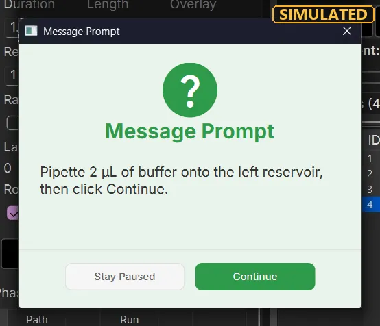
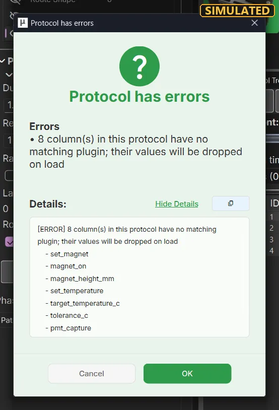
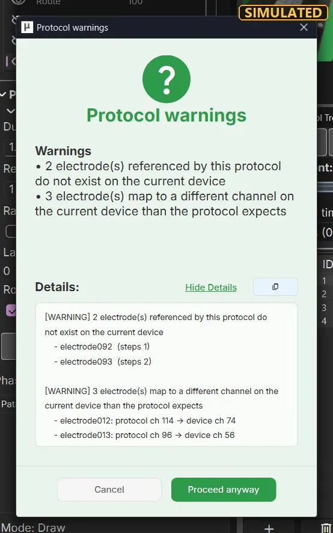
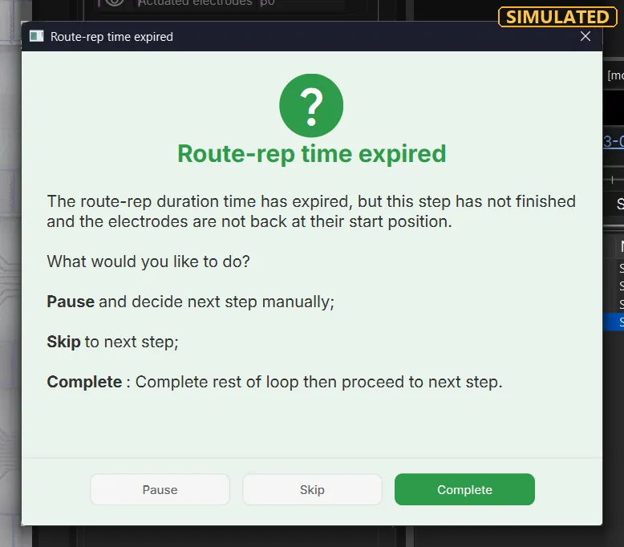
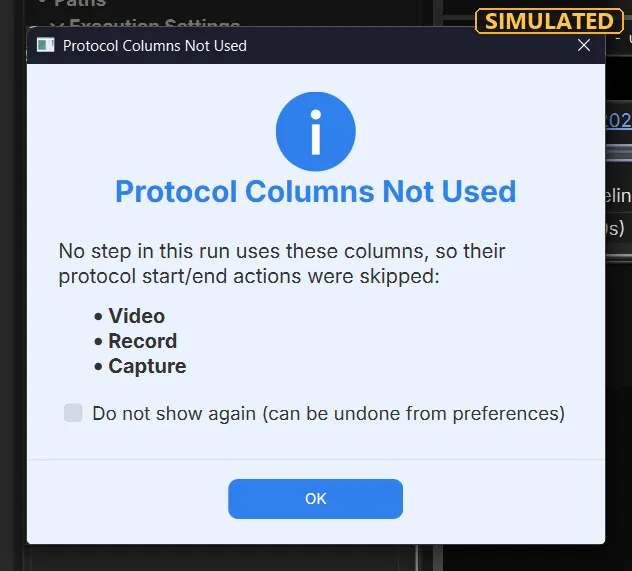
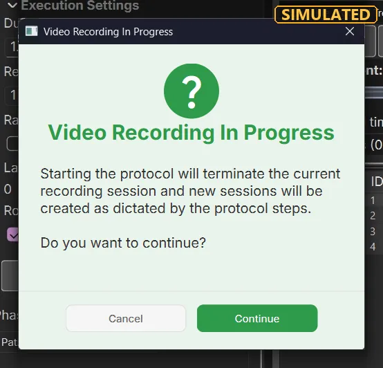

<!--
  (C) Copyright 2026 Blue Ocean Technologies, Inc., Toronto, ON
  All rights reserved.

  This software is provided without warranty under the terms of the AGPL-3.0
  license included in LICENSE and may be redistributed only under the
  conditions described in the aforementioned license. The license is also
  available online at https://www.gnu.org/licenses/agpl-3.0.txt

  Thanks for using Microdrop open source!
-->
<title>Protocol Tree Tutorial</title>
<nav data-contents></nav>

<style>
ol.howto { padding-left: 1.4em; max-width: 75ch; }
ol.howto li { margin: 5px 0; }
kbd { white-space: nowrap; }
.table-wrap { overflow-x: auto; }
ol.steps.stack li.step { grid-template-columns: minmax(0, 1fr); }
figure.clip video { width: 100%; max-width: 560px; }
figure.clip video.tall { max-width: 420px; }
figure.clip video.short { max-width: 548px; }
.two { display: grid; grid-template-columns: minmax(0, 1fr) minmax(0, 1fr); gap: 14px; align-items: start; }
@media (max-width: 900px) { .two { grid-template-columns: minmax(0, 1fr); } }
figure.still { margin: 10px 0 4px; }
figure.still figcaption { font-size: .88rem; color: var(--muted); margin-top: 4px; max-width: 75ch; }
.still-wrap { position: relative; display: inline-block; max-width: 100%; line-height: 0; }
.still-wrap img { display: block; max-width: 100%; height: auto; border-radius: 6px; }
.still-wrap svg { position: absolute; left: 0; top: 0; width: 100%; height: 100%; overflow: visible; }
.still-wrap .ann-n { fill: #ffd400; stroke: #1d2328; stroke-width: 2; }
.still-wrap .ann-nt { font: 700 14px "Segoe UI", system-ui, sans-serif; fill: #1d2328; text-anchor: middle; }
ol.legend { padding-left: 1.6em; margin: 4px 0; font-size: .9rem; }
ol.legend li { margin: 2px 0; }
table.mini { font-size: .84rem; border-collapse: collapse; white-space: nowrap; }
table.mini th, table.mini td { padding: 3px 8px; border-bottom: 1px solid var(--line); text-align: left; }
table.mini th { color: var(--muted); font-weight: 600; }
table.mini tr.grp td { font-weight: 700; }
table.mini tr.sel td { background: var(--accent-soft); }
table.mini tr.act td { background: var(--blue); color: var(--bg); }
table.mini td.in { padding-left: 22px; }
.frames { display: flex; flex-wrap: wrap; gap: 4px; margin: 8px 0; }
.frames span { font-size: .78rem; padding: 2px 6px; border-radius: 4px; border: 1px solid var(--line); background: var(--surface-2); color: var(--ink); }
.frames span.g1 { border-color: var(--blue); }
.frames span.ret { border-color: var(--orange); }
.frames span.idle { border-style: dashed; color: var(--muted); }
.frames span.hold { border-style: dotted; color: var(--muted); }
.frames span.over { border-color: var(--down); }
.frames span.now { background: var(--accent); color: var(--bg); }
.nb { display: flex; flex-wrap: wrap; gap: 4px; margin: 8px 0; }
.nb button { display: inline-flex; align-items: center; justify-content: center; min-width: 46px; height: 34px; padding: 0 6px;
  border: 1px solid var(--line); border-radius: 4px; background: var(--surface-2); color: var(--ink); cursor: pointer; font: inherit; }
.nb button svg.ic { width: 22px; height: 22px; fill: currentColor; }
.nb button:disabled { opacity: .35; cursor: default; }
.nb button.stop:not(:disabled) { background: var(--ink); color: var(--bg); }
.nb button.preview { background: #fff59d; color: #1d2328; border-color: #fbc02d; }
.nb button[hidden] { display: none; }
.nb-confirm { border: 1px solid var(--line); border-radius: 6px; padding: 8px 10px; margin: 6px 0; background: var(--surface); max-width: 46ch; }
.nb-confirm[hidden] { display: none; }
.nb-status { font-family: "Cascadia Mono", Consolas, monospace; font-size: .8rem; color: var(--muted); margin: 4px 0; }
</style>

<header data-hero>
  <h1>Protocol Tree</h1>
  <p>The <strong>Pluggable Protocol Tree</strong> pane is where you write a protocol down as a list of steps, group and
  repeat them, set what each step does, and then run it: play, pause, step through, stop and recover when something goes
  wrong.</p>
  <p>Start with the short walkthrough. The rest is a reference: every button, column, timer and dialog, with what it is,
  when to use it, how to read it and the value MicroDrop starts with. The short clips loop while they are on screen. The three demos are live: change their settings and watch.</p>
</header>

<!-- ============================================================ -->
<section data-part id="walkthrough">
<h2>Quick walkthrough</h2>
<p class="intro">From an empty protocol to a run you have paused, stepped and stopped. It assumes a chip is loaded in the
Device Viewer; the <em>Getting Started</em> tutorial covers that.</p>
<ol class="steps stack">
  <li class="step">
    <div class="step-text"><h4><span class="step-n">1</span>Add a step and give it electrodes</h4>
    <p>Click <i data-glyph="add" data-inline></i> <em>Add step below selection</em> under the tree, or press
    <kbd>Ctrl</kbd>+<kbd>Enter</kbd>. A row called <em>Step</em> appears and is selected; the status bar reads
    <em>Editing: Step&nbsp;1</em>. Double-click its <span class="ui">Name</span> to rename it. Now click electrodes in the
    Device Viewer, or draw a route there: they are written into the selected step's <span class="ui">Electrodes</span> and
    <span class="ui">Routes</span> cells (the cells show how many).</p></div>
    <figure class="clip">
    <video class="short" data-clip muted loop playsinline controls preload="metadata" width="548" height="250" poster="protocol_tree_media/add-step.webp" aria-label="Screen recording: the delete button removes the only step, then the add button adds a fresh step with no electrodes">
    <source src="protocol_tree_media/add-step.webm" type="video/webm">
    </video>
    <figcaption><strong>Real clip.</strong> <i data-glyph="ICON_DELETE" data-inline></i> removes the last step, then
    <i data-glyph="add" data-inline></i> (ringed) adds a fresh one: watch its Electrodes cell read 0.</figcaption>
    </figure>
  </li>
  <li class="step">
    <div class="step-text"><h4><span class="step-n">2</span>Set its values, add a second step, fold them into a group</h4>
    <p>Double-click <span class="ui">Duration (s)</span>, <span class="ui">Voltage (V)</span> and
    <span class="ui">Frequency (Hz)</span> and type the values. The quickest second step is
    <i data-glyph="ICON_NEXT" data-inline></i> <em>Next Step</em> (<kbd>S</kbd>) on the last step: it adds a copy of it.
    Then select both rows (click, <kbd>Shift</kbd>-click), right-click ▸ <span class="ui">Fold into Group</span> (or
    <kbd>Ctrl</kbd>+<kbd>G</kbd>) and set the new group's <span class="ui">Reps</span> to 3: both steps now run three
    times.</p></div>
    <figure class="clip">
    <video data-clip muted loop playsinline controls preload="metadata" width="548" height="471" poster="protocol_tree_media/next-step.webp" aria-label="Screen recording: the Next Step button on the last step adds a copy, and the droplet's next electrodes are clicked into the copy">
    <source src="protocol_tree_media/next-step.webm" type="video/webm">
    </video>
    <figcaption><strong>Real clip.</strong> <i data-glyph="ICON_NEXT" data-inline></i> on the last step adds step 2 as a
    copy; then the electrode the droplet should move onto is clicked, and the droplet follows (Realtime on).</figcaption>
    </figure>
  </li>
  <li class="step">
    <div class="step-text"><h4><span class="step-n">3</span>Change one column on many steps at once</h4>
    <p>Select the rows, right-click ▸ <span class="ui">Bulk Set Values…</span>, tick the column to change, choose the value
    and click <span class="ui">OK</span>. Selecting a group changes the steps directly inside it; tick
    <span class="ui">Apply to all nested groups</span> to reach steps in groups inside it too. See
    <a href="#bulk-set">Bulk Set Values</a>.</p></div>
    <figure class="clip">
    <video data-clip muted loop playsinline controls preload="metadata" width="548" height="418" poster="protocol_tree_media/context-menu.webp" aria-label="Screen recording: nine selected steps, right-clicked, the menu open with Bulk Set Values highlighted">
    <source src="protocol_tree_media/context-menu.webm" type="video/webm">
    </video>
    <figcaption><strong>Real clip.</strong> All nine steps selected and right-clicked: the menu, with the pointer on
    <span class="ui">Bulk Set Values…</span>. <span class="ui">Unfold Group</span> is greyed because no group is
    selected.</figcaption>
    </figure>
  </li>
  <li class="step">
    <div class="step-text"><h4><span class="step-n">4</span>Run, pause, step, stop</h4>
    <p>Click <i data-glyph="ICON_PLAY" data-inline></i> <em>Play Protocol</em>. The running step turns blue in the tree and
    the <span class="ui">Protocol</span>, <span class="ui">Step</span> and <span class="ui">Phase</span> timers count. Click
    the same button (now <i data-glyph="ICON_PAUSE" data-inline></i>) to pause; while paused,
    <i data-glyph="ICON_PREVIOUS" data-inline></i> / <i data-glyph="ICON_NEXT" data-inline></i> (<kbd>W</kbd> /
    <kbd>S</kbd>) move to another step and <i data-glyph="ICON_RESUME" data-inline></i> carries on from there.
    <i data-glyph="ICON_STOP" data-inline></i> (<kbd>Ctrl</kbd>+<kbd>.</kbd>) pauses and asks before ending the run.</p></div>
    <figure class="clip">
    <video data-clip muted loop playsinline controls preload="metadata" width="548" height="590" poster="protocol_tree_media/stop.webp" aria-label="Screen recording: Stop pressed during a run, the run pauses, the Confirm dialog is answered Yes, then Generate Run Summary is shown">
    <source src="protocol_tree_media/stop.webm" type="video/webm">
    </video>
    <figcaption><strong>Real clip.</strong> Stop (ringed) during a run: Play splits into the paused controls, the
    <em>Confirm</em> question is answered <span class="ui">Yes</span>, the run ends and <em>Generate Run Summary?</em>
    appears.</figcaption>
    </figure>
  </li>
  <li class="step">
    <div class="step-text"><h4><span class="step-n">5</span>Walk a step phase by phase</h4>
    <p>With nothing running, select a step that has a route and tick <span class="ui">Phase navigation</span> under the
    timeline. <i data-glyph="ICON_PREVIOUS_PHASE" data-inline></i> and <i data-glyph="ICON_NEXT_PHASE" data-inline></i>
    appear beside Play (<kbd>Ctrl</kbd>+<kbd>←</kbd> / <kbd>Ctrl</kbd>+<kbd>→</kbd>), and a phase strip appears under the
    timeline: click or drag it. With Realtime on, the droplet follows each phase.</p></div>
    <figure class="clip">
    <video data-clip muted loop playsinline controls preload="metadata" width="560" height="542" poster="protocol_tree_media/phase-drag.webp" aria-label="Screen recording: Phase navigation ticked in the protocol pane, then the phase strip dragged while the droplets follow the route phase by phase">
    <source src="protocol_tree_media/phase-drag.webm" type="video/webm">
    </video>
    <figcaption><strong>Real clip.</strong> <span class="ui">Phase navigation</span> ticked in the pane (top), then the
    phase strip under the timeline dragged: the Device Viewer's <em>Phase:</em> counter and the droplets follow.</figcaption>
    </figure>
  </li>
  <li class="step">
    <div class="step-text"><h4><span class="step-n">6</span>Fix what the dialogs report, then run again</h4>
    <p>If a protocol opens with <em>Protocol has errors</em> or <em>Protocol warnings</em>, read the list before you click
    on; if a run stops with <em>Protocol error</em>, the dialog names the step and the column that failed. Fix that cell (or
    the hardware it talks to) and press Play again. <a href="#part-errors">Errors and recovery</a> lists every case.</p></div>
  </li>
</ol>
</section>

<!-- ============================================================ -->
<section data-part id="part-pane">
<h2>The pane at a glance</h2>
<p class="intro">Open it from <span class="ui">View</span> if it is hidden. Its title reads
<em>Pluggable Protocol Tree - untitled</em> until you save, with <em>[modified]</em> while there are unsaved
changes.</p>

<figure class="still">
<div class="still-wrap"><svg viewBox="0 0 696 298" aria-hidden="true"><circle cx="15" cy="50" r="10" class="ann-n"/><text x="15" y="54" class="ann-nt">1</text><circle cx="155" cy="50" r="10" class="ann-n"/><text x="155" y="54" class="ann-nt">2</text><circle cx="270" cy="50" r="10" class="ann-n"/><text x="270" y="54" class="ann-nt">3</text><circle cx="343" cy="66" r="10" class="ann-n"/><text x="343" y="70" class="ann-nt">4</text><circle cx="384" cy="50" r="10" class="ann-n"/><text x="384" y="54" class="ann-nt">5</text><circle cx="497" cy="50" r="10" class="ann-n"/><text x="497" y="54" class="ann-nt">6</text><circle cx="609" cy="50" r="10" class="ann-n"/><text x="609" y="54" class="ann-nt">7</text><circle cx="267" cy="85" r="10" class="ann-n"/><text x="267" y="89" class="ann-nt">8</text><circle cx="567" cy="114" r="10" class="ann-n"/><text x="567" y="118" class="ann-nt">9</text><circle cx="27" cy="132" r="10" class="ann-n"/><text x="27" y="136" class="ann-nt">10</text><circle cx="199" cy="132" r="10" class="ann-n"/><text x="199" y="136" class="ann-nt">11</text><circle cx="665" cy="194" r="10" class="ann-n"/><text x="665" y="198" class="ann-nt">12</text><circle cx="22" cy="247" r="10" class="ann-n"/><text x="22" y="251" class="ann-nt">13</text></svg></div>
<figcaption>The top of the pane (the tree here is scrolled sideways to the hardware columns).</figcaption>
</figure>
<ol class="legend">
  <li><a href="#nav-buttons">First Step</a> · 2 Previous Step · 3 Play · 4 the arrow beside Play: <a href="#preview">Preview Mode</a> · 5 Stop · 6 Next Step · 7 Last Step</li>
  <li value="8"><a href="#experiment">Experiment</a> line: new experiment, the experiment folder, new note</li>
  <li value="9"><a href="#timeline">Timeline</a>: one cell per step</li>
  <li value="10"><a href="#show-full">Show full timeline</a> · 11 <a href="#phase-nav">Phase navigation</a></li>
  <li value="12"><a href="#timers">Status row</a>: timers and counters; it scrolls sideways</li>
  <li value="13">The tree: one row per step or group, one column per setting (<a href="#part-columns">Columns</a>)</li>
</ol>

<figure class="still">
<div class="still-wrap"><svg viewBox="0 0 696 46" aria-hidden="true"><circle cx="20" cy="11" r="10" class="ann-n"/><text x="20" y="15" class="ann-nt">1</text><circle cx="100" cy="11" r="10" class="ann-n"/><text x="100" y="15" class="ann-nt">2</text><circle cx="181" cy="11" r="10" class="ann-n"/><text x="181" y="15" class="ann-nt">3</text><circle cx="261" cy="11" r="10" class="ann-n"/><text x="261" y="15" class="ann-nt">4</text><circle cx="340" cy="11" r="10" class="ann-n"/><text x="340" y="15" class="ann-nt">5</text><circle cx="419" cy="11" r="10" class="ann-n"/><text x="419" y="15" class="ann-nt">6</text><circle cx="500" cy="11" r="10" class="ann-n"/><text x="500" y="15" class="ann-nt">7</text><circle cx="581" cy="11" r="10" class="ann-n"/><text x="581" y="15" class="ann-nt">8</text><circle cx="656" cy="11" r="10" class="ann-n"/><text x="656" y="15" class="ann-nt">9</text></svg></div>
<figcaption>Under the tree: the quick action buttons ① to ⑨, in the order of the <a href="#quick-actions">quick actions table</a>.
The row scrolls sideways when the pane is narrow.</figcaption>
</figure>
</section>

<!-- ============================================================ -->
<section data-part id="part-build">
<h2>Steps and groups</h2>
<p class="intro">A protocol is a tree: steps run top to bottom, and a group holds steps (and other groups) so they can be
moved, copied and repeated together.</p>

<section data-term id="step" data-where="a row whose Type is step">
  <h3>Step</h3>
  <p>One line of the protocol: which electrodes are on, which routes run, at what voltage and frequency, for how long.</p>
  <div data-what><p>A row whose <span class="ui">Type</span> cell reads <em>step</em>. Selecting it shows its electrodes and
  routes in the Device Viewer, and clicks there are written into it.</p></div>
  <div data-when><p>One step per thing the chip should do: dispense, move, mix, wait for the operator.</p></div>
  <div data-read><p>The selected step is highlighted; during a run the running step is painted blue and the tree scrolls to
  follow it. Grey cells are read-only.</p></div>
  <div data-typical><p>A new protocol starts with one step called <em>Step</em>. Press <kbd>Esc</kbd> in the tree (or click
  empty space under the rows) to deselect: the Device Viewer goes back to free mode, where clicks are not saved into any
  step.</p></div>
</section>

<section data-term id="group" data-where="a row whose Type is group">
  <h3>Group</h3>
  <p>A folder of steps. Its <span class="ui">Reps</span> repeats everything inside it.</p>
  <div data-what><p>A row whose <span class="ui">Type</span> is <em>group</em>, with an arrow to fold its children away. Only
  its <span class="ui">Name</span> and <span class="ui">Reps</span> mean anything; step-only cells are empty.</p></div>
  <div data-when><p>For a block that repeats (wash three times), or to keep a long protocol readable.</p></div>
  <div data-read><p>Its children are indented under it and numbered <em>1.1</em>, <em>1.2</em>… On the timeline, the steps
  of each group share a tint.</p></div>
  <div data-typical><p>A new group is called <em>Group</em>, Reps 1, and is empty until you add or fold steps into it.</p></div>
  <figure class="clip">
  <video data-clip data-simulated="Fold into Group, rename, Reps 3, Unfold Group (sim_toolkit shots/pt_fold_rename_unfold.py)" muted loop playsinline controls preload="metadata" width="548" height="384" poster="protocol_tree_media/fold-rename-unfold.webp" aria-label="Simulated clip: steps 2 and 3 are selected and folded into a group, the group is opened, renamed Wash and given Reps 3, then unfolded so the two steps are back where they were">
  <source src="protocol_tree_media/fold-rename-unfold.webm" type="video/webm">
  </video>
  <figcaption>Steps 2 and 3 selected,
  <kbd>Ctrl</kbd>+<kbd>G</kbd>: they become 2.1 and 2.2 of a new, folded group. Its arrow opens it; a double-click on its
  Name lets you type <em>Wash</em>, one on its <span class="ui">Reps</span> 3 (the Reps column is shown here). Then
  <kbd>Ctrl</kbd>+<kbd>Shift</kbd>+<kbd>G</kbd> unfolds it: the two steps are back, selected.</figcaption>
  </figure>
</section>

<section data-term id="id-type" data-where="ID and Type columns">
  <h3>ID and Type</h3>
  <p>Where the row sits, and what it is.</p>
  <div data-what><p><span class="ui">ID</span> is the row's position, counted from 1, with a dot per level: <em>2.3</em> is the
  third row inside the second top-level row. <span class="ui">Type</span> reads <em>step</em> or <em>group</em>. Both are
  read-only.</p></div>
  <div data-read><p>IDs renumber when rows are added, moved or deleted, so they are not permanent names. Errors and the
  status bar name steps by ID (<em>Step 1.2</em>), so check the ID before you edit.</p></div>
  <div data-typical><p>1, 2, 3 … for a flat protocol.</p></div>
</section>

<section data-term id="name" data-where="Name column">
  <h3>Name</h3>
  <p>Your label for the row.</p>
  <div data-what><p>Free text, shown in the tree, on the timeline cells, in <em>Most Recent Step</em> / <em>Next Step</em> and
  in the run report.</p></div>
  <div data-when><p>Always worth setting: <em>Dispense</em>, <em>Mix</em> and <em>Wash</em> read better than nine rows of
  <em>Step</em>.</p></div>
  <div data-typical><p><em>Step</em> for a new step, <em>Group</em> for a new group.</p></div>
</section>

<section data-term id="message" data-where="Message column">
  <h3>Message</h3>
  <p>A note for the operator, shown before the step runs.</p>
  <div data-what><p>If filled in, the run pauses at the start of this step and shows a <em>Message Prompt</em> dialog with your
  text and two buttons: <span class="ui">Continue</span> resumes the run, <span class="ui">Stay Paused</span> (or closing
  the dialog) leaves it parked on this step.</p></div>
  <div data-when><p>Anything a person must do mid-protocol: pipette, insert a chip, check a droplet.</p></div>
  <div data-read><p>While the dialog is up, the step and phase timers are frozen. A step left parked can only be ended with
  <i data-glyph="ICON_STOP" data-inline></i> Stop.</p></div>
  <div data-typical><p>Empty: no pause.</p></div>
  <figure class="still">
  <div class="still-wrap"></div>
  <figcaption>The dialog a step with a
  Message opens; the text is the step's own.</figcaption>
  </figure>
</section>

<section data-term id="tree-edit" data-where="tree right-click menu and keys">
  <h3>Add, insert, copy, move and delete rows</h3>
  <p>Everything the tree's right-click menu does, its keys, and moving rows by dragging them.</p>
  <figure class="clip">
  <video data-clip muted loop playsinline controls preload="metadata" width="548" height="370" poster="protocol_tree_media/menu-add-insert.webp" aria-label="Screen recording: Add Step from the tree's right-click menu adds a step at the end; Insert Step Above adds one above the right-clicked row">
  <source src="protocol_tree_media/menu-add-insert.webm" type="video/webm">
  </video>
  <figcaption><strong>Real clip (two moments joined).</strong> The menu, top to bottom as in the table. <span class="ui">Add
  Step</span> puts an empty step 4 at the end. Later, right-clicking step 3 ▸ <span class="ui">Insert Step Above</span>
  puts an empty step above it, and the step with two routes becomes step 4.</figcaption>
  </figure>
  <figure class="clip">
  <video data-clip data-simulated="Add Group and Insert Group Above from the tree menu (sim_toolkit shots/pt_menu_add_group.py)" muted loop playsinline controls preload="metadata" width="548" height="384" poster="protocol_tree_media/menu-add-group.webp" aria-label="Simulated clip: right-click on step 2, Add Group adds an empty group at the end; right-click on step 3, Insert Group Above puts an empty group above it and selects it">
  <source src="protocol_tree_media/menu-add-group.webm" type="video/webm">
  </video>
  <figcaption>The same menu for groups.
  Right-click step 2 ▸ <span class="ui">Add Group</span>: an empty group 5 at the end of the protocol. Right-click step 3
  ▸ <span class="ui">Insert Group Above</span>: a new group 3 right above it, selected; the steps below renumber.</figcaption>
  </figure>
  <div class="table-wrap">
  <table class="small">
    <thead><tr><th>Menu item</th><th>Key (tree focused)</th><th>What it does</th></tr></thead>
    <tbody>
      <tr><td class="lbl">Run Selected Steps</td><td>see <a href="#run-selected">caveat</a></td><td>Runs only the selected rows. Greyed when the selection would run nothing (nothing selected, or only empty groups).</td></tr>
      <tr><td class="lbl">Add Step</td><td></td><td>On a group: a new step at the end of that group. On a step: a new step at the end of the step's own group (or of the protocol). On empty space: at the end of the protocol.</td></tr>
      <tr><td class="lbl">Add Group</td><td></td><td>The same, for a new empty group.</td></tr>
      <tr><td class="lbl">Insert Step Above</td><td></td><td>A new step directly above the row you right-clicked, then selects it. Greyed on empty space.</td></tr>
      <tr><td class="lbl">Insert Group Above</td><td></td><td>A new group directly above that row.</td></tr>
      <tr><td class="lbl">Fold into Group</td><td><kbd>Ctrl</kbd>+<kbd>G</kbd></td><td>Wraps the selected rows in a new group called <em>Group</em>, where the first of them was, and selects the group. The rows must share one parent; otherwise it is greyed.</td></tr>
      <tr><td class="lbl">Unfold Group</td><td><kbd>Ctrl</kbd>+<kbd>Shift</kbd>+<kbd>G</kbd></td><td>Dissolves the selected group (or the group of the selected step) and puts its rows where it was. Greyed for top-level steps or when the selection spans two groups.</td></tr>
      <tr><td class="lbl">(drag the rows)</td><td></td><td>Moves the selected rows onto a group (at its end) or between two rows: see below the table.</td></tr>
      <tr><td class="lbl">Copy / Cut / Paste</td><td><kbd>Ctrl</kbd>+<kbd>C</kbd> / <kbd>X</kbd> / <kbd>V</kbd></td><td>Copy puts the selected rows (with groups' children) on the clipboard; Cut also removes them. Paste inserts them after the last selected row, inside a selected group at its end, or at the end of the protocol when nothing is selected. Pasted rows are new rows.</td></tr>
      <tr><td class="lbl">Bulk Set Values…</td><td></td><td>One value into one or more columns of every selected step: <a href="#bulk-set">Bulk Set Values</a>.</td></tr>
      <tr><td class="lbl">Fill Pattern…</td><td><kbd>Ctrl</kbd>+<kbd>Shift</kbd>+<kbd>F</kbd></td><td>A ramp or alternating values down a column: <a href="#fill-pattern">Fill Pattern</a>.</td></tr>
      <tr><td class="lbl">Delete Selected Row(s)</td><td><kbd>Delete</kbd></td><td>Removes the selected rows, groups with everything in them. There is no confirmation; <a href="#quick-actions">Undo</a> (<kbd>Ctrl</kbd>+<kbd>Z</kbd>) brings them back.</td></tr>
    </tbody>
  </table>
  </div>
  <figure class="clip">
  <video data-clip data-simulated="Copy, paste below a step, cut, paste into a group (sim_toolkit shots/pt_copy_cut_paste.py)" muted loop playsinline controls preload="metadata" width="548" height="384" poster="protocol_tree_media/copy-cut-paste.webp" aria-label="Simulated clip: step 1 is copied and pasted below step 3; then the step with two routes is cut and pasted into the group at the end">
  <source src="protocol_tree_media/copy-cut-paste.webm" type="video/webm">
  </video>
  <figcaption>Step 1 clicked,
  <kbd>Ctrl</kbd>+<kbd>C</kbd>; step 3 clicked, <kbd>Ctrl</kbd>+<kbd>V</kbd>: the copy (6 electrodes) lands below it as step 4.
  The step with two routes clicked, <kbd>Ctrl</kbd>+<kbd>X</kbd>: it is gone. The group clicked, <kbd>Ctrl</kbd>+<kbd>V</kbd>:
  it comes back as the group's last step, 5.2.</figcaption>
  </figure>
  <p><strong>Drag rows to move them.</strong> Select one or more rows and drag them with the mouse:</p>
  <ul class="uses">
    <li>Onto a group: they become its last rows. The cell under the pointer gets a frame in the highlight colour.</li>
    <li>Between two rows, at any level: they are inserted there. A line in the highlight colour shows the spot.</li>
    <li>Hold them over a folded group for a moment and it opens, so you can drop between its rows.</li>
    <li>Where they cannot go (a group into itself, or rows back where they already are), the pointer shows the forbidden
    sign and the drop does nothing.</li>
  </ul>
  <p>The moved rows stay selected and the IDs renumber. One drop is one edit: <a href="#quick-actions">Undo</a> names it
  <em>Move Step</em>, <em>Move Steps</em>, <em>Move Group</em> or <em>Move Rows</em>.</p>
  <figure class="clip">
  <video data-clip data-simulated="Drag a step into a group and out again (sim_toolkit shots/pt_drag_into_group.py)" muted loop playsinline controls preload="metadata" width="548" height="384" poster="protocol_tree_media/drag-into-group.webp" aria-label="Simulated clip: step 2 is dragged onto the group row and becomes its last step, 2.3; then it is dragged back to just below step 1 and is step 2 again">
  <source src="protocol_tree_media/drag-into-group.webm" type="video/webm">
  </video>
  <figcaption>Step 2 dragged onto the
  group: a frame marks the drop, and it becomes the group's last step, 2.3. Dragged back to the lower edge of step 1: a
  line marks the gap, and it is step 2 again. (In the app a picture of the dragged row also follows the pointer.)</figcaption>
  </figure>
  <p>The menu does not open while a protocol runs, and the keys and dragging do nothing then: the tree's structure is
  locked during a run.</p>
</section>

<section data-term id="build-by-next" data-where="Next Step on the last step">
  <h3>Build a sequence with Next Step</h3>
  <p>The fastest way to write a move-by-move sequence.</p>
  <ol class="howto">
    <li>Select the last step and set up its electrodes.</li>
    <li>Click <i data-glyph="ICON_NEXT" data-inline></i> <em>Next Step</em> or press <kbd>S</kbd>. On the last step it adds a
    copy of the step below it (every column copied) and selects the copy.</li>
    <li>In the copy, switch on the electrode the droplet moves onto and switch off the one it leaves. Repeat.</li>
    <li>Use <i data-glyph="ICON_PREVIOUS" data-inline></i> (<kbd>W</kbd>), <i data-glyph="ICON_FIRST" data-inline></i>
    (<kbd>A</kbd>) and <i data-glyph="ICON_LAST" data-inline></i> (<kbd>D</kbd>) to go back over what you wrote; the Device
    Viewer shows each step.</li>
  </ol>
  <figure class="clip">
  <video data-clip muted loop playsinline controls preload="metadata" width="548" height="471" poster="protocol_tree_media/step-nav.webp" aria-label="Screen recording: Next Step and Previous Step clicked repeatedly while the droplet in the Device Viewer follows each step">
  <source src="protocol_tree_media/step-nav.webm" type="video/webm">
  </video>
  <figcaption><strong>Real clip (2× speed).</strong> Next and Previous Step clicked in turn: the timeline handle moves and the
  droplet follows each step, because Realtime is on.</figcaption>
  </figure>
</section>
</section>

<!-- ============================================================ -->
<section data-part id="part-columns">
<h2>Columns</h2>
<p class="intro">Each column is one setting of the step. Double-click a cell to edit it (on the Raspberry Pi
touchscreen: tap a cell of the selected row). Some columns come from other plugins and appear only when that plugin is
loaded, and several are hidden until you show them.</p>

<section data-term id="header-menu" data-where="right-click a column header; drag a header">
  <h3>Show, hide and reorder columns</h3>
  <p>Right-click any column header: a menu lists every column with a tick for the ones shown. Untick to hide, tick to
  show. Drag a header sideways to move its column.</p>
  <div data-read><p>Both choices are remembered across restarts. Hiding a column only hides it: its values stay in the steps
  and are still applied when the protocol runs.</p></div>
  <div data-typical><p>Hidden at first: <span class="ui">Trail Len</span>, <span class="ui">Trail Overlay</span>,
  <span class="ui">Soft Start</span>, <span class="ui">Soft End</span>, <span class="ui">Lin Reps</span>,
  <span class="ui">Lanes In</span>, <span class="ui">Lanes Out</span>, <span class="ui">In/Out</span>,
  <span class="ui">Rot Lock</span>, <span class="ui">Re-centre</span>, <span class="ui">Check Droplets</span> and
  <span class="ui">Volume Threshold %</span>. The route ones are easier to set in the Device Viewer's
  <em>Execution Settings</em>, which write the same values.</p></div>
</section>

<section data-term id="reps" data-where="Reps column (steps and groups)">
  <h3>Reps</h3>
  <p>How many times the whole row runs.</p>
  <div data-what><p>On a step, the step runs that many times in a row. On a group, everything inside runs that many times, in
  order, and reps multiply: a step with Reps 2 in a group with Reps 3 runs 6 times.</p></div>
  <div data-when><p>Repeating a block (wash cycles) without copying rows. For laps of a route inside one step use
  <a href="#route-reps">Route Reps</a> instead.</p></div>
  <div data-read><p>While a repeated step runs, the status row shows <em>Step Rep 2/3</em> (one counter per repeating
  level), and <span class="ui">Step Rep</span> under the timeline jumps between repetitions.</p></div>
  <div data-typical><p>1 (1 to 1000).</p></div>
</section>

<section data-term id="duration" data-where="Duration (s) column">
  <h3>Duration (s)</h3>
  <p>How long each phase of the step is held.</p>
  <div data-what><p>A step without routes is one phase: its electrodes stay on for Duration seconds. A step with routes is
  many phases, and each is held for Duration seconds, so the step takes phases × Duration.</p></div>
  <div data-when><p>Longer for slow liquids or big electrodes; shorter for quick transport. The time the DropBot takes to
  confirm each change comes on top.</p></div>
  <div data-typical><p>1.00 s (0 to 10000, two decimals).</p></div>
</section>

<section data-term id="electrodes" data-where="Electrodes column">
  <h3>Electrodes</h3>
  <p>The electrodes held on for the whole step.</p>
  <div data-what><p>Read-only here: the cell shows how many. Click electrodes in the Device Viewer while the step is selected
  to change them.</p></div>
  <div data-read><p>0 means the step switches nothing on by itself (it may still have routes).</p></div>
  <div data-typical><p>0 for a new step.</p></div>
</section>

<section data-term id="routes" data-where="Routes column">
  <h3>Routes</h3>
  <p>The paths a droplet is walked along during the step.</p>
  <div data-what><p>Read-only here: the cell counts the routes. Draw them in the Device Viewer while the step is selected.
  A route that ends where it starts is a loop; any other route is a line.</p></div>
  <div data-read><p>A step with routes runs as <a href="#phases">phases</a>; several routes run side by side, phase for
  phase.</p></div>
  <div data-typical><p>0.</p></div>
</section>

<section data-term id="route-reps" data-where="Route Reps column">
  <h3>Route Reps</h3>
  <p>How many laps the step's loop routes make.</p>
  <div data-what><p>Each loop runs this many laps, then one more phase brings the droplet back onto its start. A line runs
  once unless <a href="#lin-reps">Lin Reps</a> is on. Route Reps × Reps is how often the routes play in all.</p></div>
  <div data-when><p>Mixing: three laps of a loop is Route Reps 3.</p></div>
  <div data-read><p>Its tooltip says which knob is in control. While <a href="#route-reps-dur">Route Reps Dur</a> is in
  control, this cell shows how many full laps fit; editing it takes control back.</p></div>
  <div data-typical><p>1 (1 to 10000).</p></div>
</section>

<section data-term id="route-reps-dur" data-where="Route Reps Dur column">
  <h3>Route Reps Dur</h3>
  <p>The other way to say how long loops run: in seconds instead of laps.</p>
  <div data-what><p>Typing a time asks <em>Switch to Repeat Duration Control</em>: <span class="ui">Switch</span> makes the
  step run as many full laps as fit in that time and hold the droplet at the start for the rest, so the step takes exactly
  that long. Setting it back to 0 asks <em>Switch to Route Reps Control</em>. <span class="ui">Cancel</span> keeps the old
  value.</p></div>
  <div data-when><p>When the step must last a fixed time (incubate while mixing for 60 s) whatever the loop length.</p></div>
  <div data-read><p>While Route Reps is in control this cell shows the estimated step time instead. If the time is too short
  for even one lap, the run asks <em>Route-rep time expired</em> (see <a href="#part-errors">Errors</a>). Try both knobs
  in the <a href="#route-demo">route timing demo</a>.</p></div>
  <div data-typical><p>0.00 (Route Reps in control).</p></div>
</section>

<section data-term id="trail" data-where="Trail Len and Trail Overlay columns (hidden)">
  <h3>Trail Len and Trail Overlay</h3>
  <p>How many electrodes of a route are on at once, and how far the window moves each phase.</p>
  <div data-what><p><span class="ui">Trail Len</span> electrodes are on together, sliding along the route.
  <span class="ui">Trail Overlay</span> is how many of them the next phase keeps; the window moves Trail Len − Overlay
  electrodes per phase, so the overlay can be at most Trail Len − 1.</p></div>
  <div data-when><p>A longer trail for big droplets or slugs; overlay for smoother, smaller steps.</p></div>
  <div data-typical><p>Trail Len 1, Overlay 0 (one electrode, one electrode per phase). In the Device Viewer they are
  <em>Length</em> and <em>Overlay</em>.</p></div>
</section>

<section data-term id="soft" data-where="Soft Start and Soft End columns (hidden)">
  <h3>Soft Start and Soft End</h3>
  <p>Gentle ramps at the ends of a route.</p>
  <div data-what><p><span class="ui">Soft Start</span> adds phases that grow from 1 electrode to the full trail before the
  route starts; <span class="ui">Soft End</span> adds phases that shrink it back at the end. Each adds Trail Len − 1
  phases, so with a trail of 1 they change nothing.</p></div>
  <div data-typical><p>Off. The Device Viewer calls them <em>Ramp Up</em> and <em>Ramp Dn</em>.</p></div>
</section>

<section data-term id="lin-reps" data-where="Lin Reps column (hidden)">
  <h3>Lin Reps</h3>
  <p>Whether lines repeat too.</p>
  <div data-what><p>With Lin Reps on, a route that is a line is replayed Route Reps times from its start. Off, a line runs
  once whatever Route Reps says; loops always follow Route Reps.</p></div>
  <div data-typical><p>Off.</p></div>
</section>

<section data-term id="slug" data-where="Rot Lock, In/Out, Re-centre, Lanes In, Lanes Out (hidden)">
  <h3>Rot Lock, In/Out, Re-centre, Lanes In and Lanes Out</h3>
  <p>The shape of a wide trail (a slug) and how it turns corners.</p>
  <div data-what><p><span class="ui">Lanes In</span> / <span class="ui">Lanes Out</span> add lanes beside the route, on the
  inside / outside of each turn when <span class="ui">In/Out</span> is on (screen-left / screen-right of travel when off).
  <span class="ui">Rot Lock</span> keeps the slug's starting orientation through corners instead of re-hanging behind its
  head; <span class="ui">Re-centre</span> centres a locked slug on the route as it crosses its own heading.</p></div>
  <div data-when><p>Moving large or elongated droplets that cover several electrodes.</p></div>
  <div data-typical><p>Lanes In 0, Lanes Out 0 (0 to 20): a plain one-electrode trail. In/Out, Rot Lock and Re-centre on. The
  Device Viewer's <em>Lanes</em> slider and checkboxes set the same values.</p></div>
</section>

<section data-term id="voltage" data-where="Voltage (V) column (DropBot)">
  <h3>Voltage (V)</h3>
  <p>The voltage this step drives the electrodes with.</p>
  <div data-what><p>Sent to the DropBot at the start of the step, before any electrode switches; the step waits for the
  DropBot to confirm it (up to the <a href="#ack-times">ack wait</a>). Editing a cell also makes it the starting value for
  the next new step and the next session.</p></div>
  <div data-when><p>Raise it where droplets move sluggishly; lower it where they split or stick.</p></div>
  <div data-typical><p>The voltage you last applied (whole volts, from 30 V up to the DropBot's limit, 140 V on most
  boards).</p></div>
</section>

<section data-term id="frequency" data-where="Frequency (Hz) column (DropBot)">
  <h3>Frequency (Hz)</h3>
  <p>The drive frequency for this step.</p>
  <div data-what><p>Sent with the voltage at the start of the step and confirmed the same way.</p></div>
  <div data-typical><p>The frequency you last applied, in whole hertz (from 100 Hz).</p></div>
</section>

<section data-term id="force" data-where="Force (mN/m) column (DropBot)">
  <h3>Force (mN/m)</h3>
  <p>The pull this step's voltage gives, worked out from your capacitance calibration.</p>
  <div data-what><p>Read-only and never saved: it follows the step's voltage and the latest calibration in the Device
  Viewer.</p></div>
  <div data-read><p>Empty until both calibrations (filler and liquid) are measured. Doubling the voltage gives four times the
  force.</p></div>
  <div data-typical><p>Empty (0.0) before calibration.</p></div>
</section>

<section data-term id="check-droplets" data-where="Check Droplets column (DropBot, hidden)">
  <h3>Check Droplets</h3>
  <p>Ask the DropBot, after the step, whether the droplets are where they should be.</p>
  <div data-what><p>After the step's phases, MicroDrop checks for liquid on the step's electrodes and on the last electrode
  of each route. If any is missing, the run pauses with <em>Droplet Detection Failed</em>, listing
  <em>Expected</em>, <em>Detected</em> and <em>Missing</em> channels: <span class="ui">Continue</span> carries on,
  <span class="ui">Stay Paused</span> leaves the run paused for you to fix it and resume.</p></div>
  <div data-when><p>After dispensing or splitting, where a lost droplet would spoil the rest of the run.</p></div>
  <div data-typical><p>Off. Skipped in Preview Mode; the check waits up to 12 s (its ack wait).</p></div>
</section>

<section data-term id="volume-threshold" data-where="Volume Threshold % column (hidden)">
  <h3>Volume Threshold %</h3>
  <p>End each phase as soon as the liquid has arrived.</p>
  <div data-what><p>A percentage of the actuated electrodes' full (liquid-covered) capacitance. Each phase moves on as soon
  as the measured capacitance reaches it. If it is not reached within the phase's Duration, the run pauses with
  <em>Volume Threshold Not Reached</em> (see <a href="#part-errors">Errors</a>).</p></div>
  <div data-when><p>Slow or variable liquids, where a fixed Duration is either too short or wastes time.</p></div>
  <div data-read><p>Needs a calibration and a loaded device; without them the column is skipped (it says so in the log).
  Skipped in Preview Mode.</p></div>
  <div data-typical><p>0 = off (0 to 100).</p></div>
</section>

<section data-term id="video-record" data-where="Video and Record columns">
  <h3>Video and Record</h3>
  <p>Camera on, and screen recording, per step.</p>
  <div data-what><p><span class="ui">Video</span> ticked turns the live camera on for the step, unticked turns it off. A run
  of ticked <span class="ui">Record</span> steps is recorded as one video into the experiment folder, starting at the first
  and stopping at the first unticked step (or the end of the run).</p></div>
  <div data-read><p>If a recording is already going when you press Play, MicroDrop asks <em>Video Recording In
  Progress</em>: <span class="ui">Continue</span> stops it and lets the protocol make its own,
  <span class="ui">Cancel</span> does not start the run.</p></div>
  <div data-typical><p>Both off.</p></div>
</section>

<section data-term id="capture" data-where="Capture, Capture At, Camera Lead (ms), Camera Settings columns">
  <h3>Capture</h3>
  <p>One picture per step, saved into the experiment folder.</p>
  <div data-what><p><span class="ui">Capture</span> ticked takes a picture during the step; <span class="ui">Capture At</span>
  says when (<em>Step Start</em> or <em>Step End</em>); <span class="ui">Camera Lead (ms)</span> keeps the camera on that
  long before the picture so it can settle; <span class="ui">Camera Settings</span> shows the resolution the step captures
  with, taken from the Device Viewer's camera panel while the step is selected (hover for the camera properties).</p></div>
  <div data-read><p>The other three cells are blank and locked until Capture is ticked. The step waits until the picture is
  on disk (up to its ack wait, 15 s).</p></div>
  <div data-typical><p>Capture off, Step Start, 0 ms (no lead), camera defaults.</p></div>
</section>

<section data-term id="other-columns" data-where="columns from hardware plugins">
  <h3>Columns from other plugins</h3>
  <p>Heater, magnet, fluorescence and Portable DropBot plugins add their own columns. They appear only while that plugin is
  loaded, and they come and go when a plugin is added or removed through Manage Plugins. A protocol saved with such a column
  and opened without the plugin reports it under <a href="#load-errors">Protocol has errors</a>.</p>
</section>

<section data-term id="bulk-set" data-where="right-click ▸ Bulk Set Values…">
  <h3>Bulk Set Values</h3>
  <p>Set one or more columns to the same value on many steps.</p>
  <div class="two">
  <div>
  <ol class="howto">
    <li>Select the rows: click, then <kbd>Shift</kbd>-click or <kbd>Ctrl</kbd>-click; selecting a group stands for its
    steps.</li>
    <li>Right-click ▸ <span class="ui">Bulk Set Values…</span>. The window lists every column you can set, each with a tick
    box; the value box beside it is greyed until you tick it.</li>
    <li>Tick the columns to change and choose their values (tick boxes such as Video read <em>Off</em> / <em>On</em>).</li>
    <li>Tick <span class="ui">Apply to all nested groups</span> if steps in groups inside the selected groups should change
    too; untick, only the steps directly inside change.</li>
    <li>Click <span class="ui">OK</span>.</li>
  </ol>
  <p>Read-only columns (ID, Type, Electrodes, Routes, Force) are not offered. Changing Route Reps Dur this way asks the
  switch question once for all the rows.</p>
  </div>
  <figure class="clip">
  <video data-clip data-simulated="Bulk Set Values with Apply to all nested groups (sim_toolkit shots/pt_bulk_set_nested.py)" muted loop playsinline controls preload="metadata" width="700" height="580" poster="protocol_tree_media/bulk-set-nested.webp" aria-label="Simulated clip: a group holding a step and a nested group, and a step after it, are selected; Bulk Set Values is opened from the right-click menu, Voltage is ticked and set to 120, Apply to all nested groups is ticked, OK; every step in both groups and the selected step now read 120">
  <source src="protocol_tree_media/bulk-set-nested.webm" type="video/webm">
  </video>
  <figcaption>Group 2 (with group 2.2
  inside it) and step 3 selected, right-click ▸ <span class="ui">Bulk Set Values…</span>. Scrolled down to
  <span class="ui">Voltage (V)</span>, ticked, 140 replaced by 120, <span class="ui">Apply to all nested groups</span>
  ticked, OK: 2.1, 2.2.1, 2.2.2 and 3 now read 120; step 1, not selected, keeps 140.</figcaption>
  </figure>
  </div>
</section>

<section data-term id="fill-pattern" data-where="toolbar, right-click ▸ Fill Pattern…, Ctrl+Shift+F">
  <h3>Fill Pattern</h3>
  <p>A ramp or an alternating set of values down a column.</p>
  <ol class="howto">
    <li>Select the steps, then click <i data-glyph="ICON_STACKED_LINE_CHART" data-inline></i> under the tree, right-click ▸
    <span class="ui">Fill Pattern…</span>, or press <kbd>Ctrl</kbd>+<kbd>Shift</kbd>+<kbd>F</kbd> in the tree.</li>
    <li>Pick the <span class="ui">Column</span>, then <span class="ui">Ramp</span> (from / to) or
    <span class="ui">Alternate</span> (a list of values).</li>
    <li>Read the line under the values: it says what will happen, or why <span class="ui">OK</span> is greyed (a value out of
    range, a ramp that starts and stops on the same value).</li>
  </ol>
  <p>With one step selected it adds new copies after it instead; with none, after the last step.</p>
  <figure class="clip">
  <video data-clip muted loop playsinline controls preload="metadata" width="572" height="632" poster="protocol_tree_media/fill-pattern.webp" aria-label="Screen recording of the Fill Pattern window setting the Voltage column of nine steps to alternate 120 and 125">
  <source src="protocol_tree_media/fill-pattern.webm" type="video/webm">
  </video>
  <figcaption><strong>Real clip (edited for length).</strong> Nine steps selected, Fill Pattern opened from the toolbar,
  Column <span class="ui">Voltage (V)</span>, <span class="ui">Alternate</span> 120, 125, OK: the Voltage column now
  alternates.</figcaption>
  </figure>
</section>
</section>

<!-- ============================================================ -->
<section data-part id="part-timing">
<h2>Timing and repetition</h2>
<p class="intro">Four numbers multiply: the protocol's <a href="#repeat-protocol">Repeat Protocol</a>, every enclosing
group's <a href="#reps">Reps</a>, the step's own Reps, and the step's phases × <a href="#duration">Duration</a>.</p>

<section data-term id="phases" data-where="Phase timer, phase strip, Device Viewer Phases">
  <h3>Phase</h3>
  <p>One set of switched-on electrodes, held for one Duration.</p>
  <div data-what><p>A step without routes is a single phase. A route is walked one phase at a time: with the default trail,
  one phase per electrode. A loop adds one return phase after its last lap, so the droplet ends where it started. Routes
  of the same step advance together; the step lasts as long as its longest route.</p></div>
  <div data-read><p>The status row's <span class="ui">Phase</span> reads <em>Phase 3/7 0.5s/1.0s (0.6s)</em>: phase 3 of 7,
  0.5 s of its 1.0 s Duration done, 0.6 s on the clock including pauses.</p></div>
  <div data-typical><p>Line of 6 electrodes: 6 phases. Loop of 6 electrodes with Route Reps 2: 2 × 6 + 1 = 13 phases.</p></div>
</section>

<section data-term id="tree-demo-card" data-where="try it">
  <h3>Reps, groups and total time</h3>
  <p>The protocol below has a group <em>Wash</em> holding two steps, then one more step. None of them has routes, so each
  run of a step lasts its Duration. Change the numbers and watch the run order and the total.</p>
  <figure data-demo="tree-time" aria-label="Interactive demo of how Reps and groups expand into a run order">
    <div class="controls">
      <label>Wash Reps <input type="range" id="tt-g" min="1" max="4" value="3"></label><output for="tt-g"></output>
      <label>Load Reps <input type="range" id="tt-ra" min="1" max="3" value="1"></label><output for="tt-ra"></output>
    </div>
    <div class="controls">
      <label>Load Duration <input type="range" id="tt-da" min="0.5" max="5" step="0.5" value="1"></label><output for="tt-da"></output>
      <label>Rinse Duration <input type="range" id="tt-db" min="0.5" max="5" step="0.5" value="2"></label><output for="tt-db"></output>
    </div>
    <div class="controls">
      <label>Repeat Protocol <input type="range" id="tt-n" min="1" max="3" value="1"></label><output for="tt-n"></output>
      <label>Start <select id="tt-mode">
        <option value="all">Play, nothing selected</option>
        <option value="from">Play with step 2 (Dry) selected</option>
        <option value="group">Run Selected Steps: the group</option>
        <option value="load">Run Selected Steps: Load only</option>
      </select></label>
    </div>
    <div class="table-wrap"><table class="mini" id="tt-tree"></table></div>
    <div class="frames" id="tt-frames"></div>
    <p class="status" id="tt-status"></p>
    <figcaption>Rules from the app: a group's Reps repeats its children in order; Run Selected Steps ignores the Reps of
    groups outside the selection; Play from a selected step skips the rows before it only in the first repetition of
    Repeat Protocol.</figcaption>
  </figure>
</section>

<section data-term id="route-demo" data-where="try it">
  <h3>Route Reps or Route Reps Dur</h3>
  <p>One step with one route, the default trail of one electrode. Pick a loop or a line and compare counting laps with
  giving a time.</p>
  <figure data-demo="route-time" aria-label="Interactive demo of route phases, Route Reps and Route Reps Dur">
    <div class="controls">
      <label>Route <select id="rt-kind"><option value="loop">Loop</option><option value="line">Line</option></select></label>
      <label>Electrodes <input type="range" id="rt-n" min="3" max="12" value="6"></label><output for="rt-n"></output>
      <label>Duration <input type="range" id="rt-d" min="0.25" max="2" step="0.25" value="0.5"></label><output for="rt-d"></output>
    </div>
    <div class="controls">
      <label>Route Reps <input type="range" id="rt-r" min="1" max="6" value="2"></label><output for="rt-r"></output>
      <label>Route Reps Dur <input type="range" id="rt-dur" min="0" max="30" step="1" value="0"></label><output for="rt-dur"></output>
      <label><input type="checkbox" id="rt-lin"> Lin Reps</label>
      <label>Reps <input type="range" id="rt-reps" min="1" max="3" value="1"></label><output for="rt-reps"></output>
    </div>
    <div class="frames" id="rt-frames"></div>
    <table class="readout" id="rt-read"></table>
    <p class="status" id="rt-status"></p>
    <figcaption>Each box is one phase: numbers are the electrode along the route, ↺ the return phase, <em>idle</em> a phase
    holding the loop's start, and <em>hold</em> the leftover time held at the end. Computed with the app's phase rules for a
    trail of one electrode; the DropBot's confirmation time per phase is not included.</figcaption>
  </figure>
</section>

<section data-term id="repeat-protocol" data-where="status row ▸ Repeat Protocol">
  <h3>Repeat Protocol</h3>
  <p>Run the whole protocol several times in one go.</p>
  <div data-what><p>The box after <span class="ui">Repeat Protocol:</span> is how many times Play runs the protocol; the number
  before it counts the ones finished (<em>1/</em>&nbsp;3).</p></div>
  <div data-when><p>Repeating a complete experiment without making the tree longer.</p></div>
  <div data-read><p>It also applies to Run Selected Steps. Starting from a selected step skips the earlier steps only in the
  first repetition.</p></div>
  <div data-typical><p>1 (1 to 999).</p></div>
</section>

<section data-term id="step-phase-rep" data-where="Step Rep and Phase Rep under the timeline">
  <h3>Step repetition and phase repetition</h3>
  <p>Two different kinds of repeat, with a jump box each.</p>
  <div data-what><p>A <strong>step repetition</strong> is one pass of a step that repeats through its own or a group's
  <span class="ui">Reps</span>. A <strong>phase repetition</strong> is one lap of its routes through
  <span class="ui">Route Reps</span>. When the selected or running step has more than one, <span class="ui">Step Rep</span>
  (<em>Jump to a step repetition</em>) and <span class="ui">Phase Rep</span> (<em>Jump to a phase repetition</em>) appear
  under the timeline, reading <em>2/3</em>.</p></div>
  <div data-when><p>Paused mid-way through laps or reps: pick another one to go straight to it.</p></div>
  <div data-read><p>With Phase Rep showing, the phase strip shows one lap and the box says which lap. Both boxes hide while
  <a href="#show-full">Show full timeline</a> is ticked.</p></div>
</section>
</section>

<!-- ============================================================ -->
<section data-part id="part-run">
<h2>Running a protocol</h2>
<p class="intro">The transport buttons at the top of the pane work like a media player, and so does the timeline under them.</p>

<section data-term id="nav-buttons" data-where="top of the pane">
  <h3>Transport buttons</h3>
  <p>Hover a button to see its name and key. The keys work while the protocol pane (the tree included) has focus.</p>
  <table class="small icons-table">
    <thead><tr><th>Icon</th><th>Tooltip</th><th>What it does</th></tr></thead>
    <tbody>
      <tr><td class="icons"><i data-glyph="ICON_FIRST"></i></td><td class="lbl">First Step (A)</td><td>Selects the first step. While paused, the run continues from there.</td></tr>
      <tr><td class="icons"><i data-glyph="ICON_PREVIOUS"></i></td><td class="lbl">Previous Step (W)</td><td>Selects the step before; with nothing selected, the first.</td></tr>
      <tr><td class="icons"><i data-glyph="ICON_PLAY"></i></td><td class="lbl">Play Protocol</td><td>Runs from the selected step, or from the top when no step is selected. While running it becomes Pause.</td></tr>
      <tr><td class="icons"><i data-glyph="video_search" data-on></i></td><td class="lbl">Preview Protocol</td><td>Play while <a href="#preview">Preview Mode</a> is ticked: the button turns yellow.</td></tr>
      <tr><td class="icons"><i data-glyph="ICON_PAUSE"></i></td><td class="lbl">Pause Protocol</td><td>Pauses at once; the timers freeze.</td></tr>
      <tr><td class="icons"><i data-glyph="ICON_PREVIOUS_PHASE"></i><i data-glyph="ICON_RESUME"></i><i data-glyph="ICON_NEXT_PHASE"></i></td><td class="lbl">Previous Phase (Ctrl+Left) · Resume Protocol (Ctrl+R) · Next Phase (Ctrl+Right)</td><td>While paused, Play splits into these three: step a phase back or on, or carry on.</td></tr>
      <tr><td class="icons"><i data-glyph="ICON_STOP"></i></td><td class="lbl">Stop Protocol (Ctrl+.)</td><td>Pauses, then asks <em>Select YES to force finish protocol...</em>: <span class="ui">Yes</span> ends the run, <span class="ui">No</span> leaves it paused. Greyed when nothing runs.</td></tr>
      <tr><td class="icons"><i data-glyph="ICON_NEXT"></i></td><td class="lbl">Next Step (S)</td><td>Selects the next step; on the last step (not while paused) adds a copy of it.</td></tr>
      <tr><td class="icons"><i data-glyph="ICON_LAST"></i></td><td class="lbl">Last Step (D)</td><td>Selects the last step.</td></tr>
    </tbody>
  </table>
  <p>While a run is going, First, Previous, Next and Last are greyed; pause to use them. Play's tooltip reads just
  <em>Play Protocol</em>, but <kbd>Ctrl</kbd>+<kbd>R</kbd> works for it too (see the <a href="#run-selected">caveat</a>).</p>
</section>

<section data-term id="nav-demo-card" data-where="try it">
  <h3>Try the buttons</h3>
  <p>A copy of the button row over a three-step protocol: <em>Mix</em> has a route of 4 phases and sits in a group with Reps
  2. Click the buttons and watch which row and phase they move to.</p>
  <figure data-demo="navbar" aria-label="Interactive replica of the transport buttons">
    <div class="nb" id="nb-bar">
      <button type="button" data-act="first" title="First Step (A)" aria-label="First Step"><svg class="ic" aria-hidden="true"><use href="#ic-first"/></svg></button>
      <button type="button" data-act="prev" title="Previous Step (W)" aria-label="Previous Step"><svg class="ic" aria-hidden="true"><use href="#ic-previous"/></svg></button>
      <button type="button" data-act="pphase" title="Previous Phase (Ctrl+Left)" aria-label="Previous Phase" hidden><svg class="ic" aria-hidden="true"><use href="#ic-previous_phase"/></svg></button>
      <button type="button" data-act="play" title="Play Protocol" aria-label="Play, Pause"><svg class="ic" aria-hidden="true"><use href="#ic-play"/></svg></button>
      <button type="button" data-act="resume" title="Resume Protocol (Ctrl+R)" aria-label="Resume" hidden><svg class="ic" aria-hidden="true"><use href="#ic-resume"/></svg></button>
      <button type="button" data-act="nphase" title="Next Phase (Ctrl+Right)" aria-label="Next Phase" hidden><svg class="ic" aria-hidden="true"><use href="#ic-next_phase"/></svg></button>
      <button type="button" data-act="stop" class="stop" title="Stop Protocol (Ctrl+.)" aria-label="Stop"><svg class="ic" aria-hidden="true"><use href="#ic-stop"/></svg></button>
      <button type="button" data-act="next" title="Next Step (S)" aria-label="Next Step"><svg class="ic" aria-hidden="true"><use href="#ic-next"/></svg></button>
      <button type="button" data-act="last" title="Last Step (D)" aria-label="Last Step"><svg class="ic" aria-hidden="true"><use href="#ic-last"/></svg></button>
    </div>
    <div class="controls">
      <label><input type="checkbox" id="nb-phase"> Phase navigation</label>
      <label><input type="checkbox" id="nb-preview"> Preview Mode</label>
      <button type="button" id="nb-reset">Reset</button>
    </div>
    <div class="nb-confirm" id="nb-confirm" hidden><strong>Confirm</strong><br>Select <b>YES</b> to force finish protocol...
      <div class="controls"><button type="button" id="nb-yes">Yes</button><button type="button" id="nb-no">No</button></div></div>
    <div class="nb-status" id="nb-status" aria-live="polite"></div>
    <div class="table-wrap"><table class="mini" id="nb-tree"></table></div>
    <p class="status" id="nb-note"></p>
    <figcaption>The running row is blue, the selected row tinted. Button states follow the app: idle, running and paused.
    The run is slowed down to a phase every 0.7 s.</figcaption>
  </figure>
</section>

<section data-term id="play" data-where="Play button">
  <h3>Starting a run</h3>
  <ol class="howto">
    <li>Check the DropBot is connected, then select the step to start from, or press <kbd>Esc</kbd> to start at the top.</li>
    <li>Click <i data-glyph="ICON_PLAY" data-inline></i>. If Realtime is off, MicroDrop turns it on for the run and off again
    afterwards. If it is already on, it asks <em>Keep Realtime Mode Enabled Post-Protocol?</em>: <span class="ui">Yes</span>
    leaves it on afterwards; tick <span class="ui">Don't ask again</span> to keep that answer (Protocol Settings can undo
    it).</li>
    <li><em>Preparing protocol run…</em> covers the tree for the <a href="#settings">settling time</a>, then the first step
    runs.</li>
    <li>If no step uses some columns, <em>Protocol Columns Not Used</em> lists them: their start and end actions are
    skipped for this run. Click OK.</li>
  </ol>
  <figure class="clip">
  <video class="tall" data-clip muted loop playsinline controls preload="metadata" width="546" height="770" poster="protocol_tree_media/play-realtime.webp" aria-label="Screen recording of Play pressed with Realtime on and the Keep Realtime Mode Enabled Post-Protocol question answered Yes">
  <source src="protocol_tree_media/play-realtime.webm" type="video/webm">
  </video>
  <figcaption><strong>Real clip (one wait cut).</strong> Play pressed with Realtime on: the keep-Realtime question, Don't ask
  again ticked, Yes, and the run starts.</figcaption>
  </figure>
</section>

<section data-term id="running" data-where="tree, timers, Device Viewer">
  <h3>While it runs</h3>
  <p>The running step is blue and the tree follows it; the Device Viewer shows its electrodes; the timers count. The tree's
  rows cannot be added, moved or deleted, and cells cannot be edited, unless <span class="ui">Edit ▸ Advanced Mode</span>
  is on: then cells (not rows) can be edited mid-run, and an edit to the running step is applied to the hardware at once.</p>
  <figure class="clip">
  <video style="max-width:min(700px, 100%)" data-clip muted loop playsinline controls preload="metadata" width="700" height="482" poster="protocol_tree_media/run-routes.webp" aria-label="Screen recording of a four-step run: Preparing protocol run, three electrode steps, then a step whose two loop routes run phase by phase while the droplets follow">
  <source src="protocol_tree_media/run-routes.webm" type="video/webm">
  </video>
  <figcaption><strong>Real clip (2× speed).</strong> Play, <em>Preparing protocol run…</em>, then the blue row moves
  through steps 1 to 3. Step 4 has two loop routes: the status row counts <em>Phase 1/17</em> to 17/17 while the Device
  Viewer (left) shows the droplets going round.</figcaption>
  </figure>
</section>

<section data-term id="timers" data-where="status row under the timeline">
  <h3>Protocol, Step and Phase timers</h3>
  <p>How long the run, the step and the phase have been going.</p>
  <div data-what><p>Each reads <em>active (clock)</em>: the first number leaves out pauses, the one in brackets is clock time
  including pauses. <span class="ui">Phase</span> also shows the phase number and its Duration target.</p></div>
  <div data-read><p>Scroll the row sideways for the rest: <span class="ui">Repeat Protocol</span>,
  <em>Step 2/9</em> (which distinct step of how many), <em>Step Rep 1/3</em> (only for repeating steps),
  <em>Most Recent Step</em> and <em>Next Step</em> (hover a long name to scroll it).</p></div>
  <div data-typical><p>All 0.0s until the first run.</p></div>
</section>

<section data-term id="timeline" data-where="bar under the Experiment line">
  <h3>Timeline</h3>
  <p>A seek bar: one cell per step, a handle on the current one.</p>
  <div data-what><p>Click a cell or drag the handle. When nothing runs this selects the step (the Device Viewer shows it).
  While paused it moves the run there, so Resume carries on from that step. While running it only previews; the run goes on
  with its own step at the next boundary.</p></div>
  <div data-read><p>Steps in the same group share a tint. A second, thinner strip appears for the phases of the current
  step while running, with Phase navigation, or for a step with several laps. The last cell of a step that loops for a fixed
  time while waiting on a volume threshold is painted dark yellow: that is where it parks idle.</p></div>
  <figure class="clip">
  <video data-clip muted loop playsinline controls preload="metadata" width="548" height="471" poster="protocol_tree_media/timeline-scrub.webp" aria-label="Screen recording of the timeline handle dragged back and forth while the Device Viewer shows each step">
  <source src="protocol_tree_media/timeline-scrub.webm" type="video/webm">
  </video>
  <figcaption><strong>Real clip (3× speed).</strong> The timeline handle dragged along the steps while nothing runs: each
  step is selected in turn and the droplet follows (Realtime on).</figcaption>
  </figure>
</section>

<section data-term id="show-full" data-where="Show full timeline">
  <h3>Show full timeline</h3>
  <p>Unroll every repetition on the timeline.</p>
  <div data-what><p>Ticked, the timeline has one cell per repetition of every step (a step with Reps 3 gets three cells), and
  the phase strip shows every lap instead of one. Tooltip: <em>Show every phase/step across all repetitions instead of a
  collapsed base loop</em>.</p></div>
  <div data-when><p>To jump to, say, the second pass of a group while paused.</p></div>
  <div data-typical><p>Off.</p></div>
</section>

<section data-term id="phase-nav" data-where="Phase navigation; Device Viewer ▸ Phases">
  <h3>Phase navigation</h3>
  <p>Step through the selected step's phases without running the protocol.</p>
  <div data-what><p>Ticked (only while nothing runs), <i data-glyph="ICON_PREVIOUS_PHASE" data-inline></i> and
  <i data-glyph="ICON_NEXT_PHASE" data-inline></i> appear around Play and the phase strip shows. It is the same switch as
  <span class="ui">Phases</span> in the Device Viewer's Paths section: ticking either ticks both.</p></div>
  <div data-when><p>Checking a new route move by move; with Realtime on the DropBot follows, so you can walk a droplet slowly
  by hand.</p></div>
  <div data-read><p>The Device Viewer shows <em>Phase: 2/11</em>; the pane's buttons grey out at the first and last phase.
  Pressing Play turns it off.</p></div>
  <div data-typical><p>Off.</p></div>
  <figure class="clip">
  <video data-clip muted loop playsinline controls preload="metadata" width="560" height="514" poster="protocol_tree_media/phase-sync.webp" aria-label="Screen recording: the Phases box ticked in the Device Viewer ticks Phase navigation in the protocol pane; then the next and previous phase buttons step the route's head along the loop">
  <source src="protocol_tree_media/phase-sync.webm" type="video/webm">
  </video>
  <figcaption><strong>Real clip.</strong> <span class="ui">Phases</span> ticked in the Device Viewer (ringed, lower right)
  also ticks <span class="ui">Phase navigation</span> in the pane (top); then the phase buttons step the route's head
  along the loops and the counter follows.</figcaption>
  </figure>
</section>

<section data-term id="preview" data-where="arrow beside Play ▸ Preview Mode">
  <h3>Preview Mode</h3>
  <p>A dry run that sends nothing to the hardware.</p>
  <div data-what><p>Click the small arrow beside Play and tick <span class="ui">Preview Mode</span> (<em>Run the protocol
  without sending any hardware messages (useful when no DropBot is connected)</em>). Play turns yellow with
  <i data-glyph="video_search" data-inline></i>. The Device Viewer still shows every phase; voltage, frequency, droplet
  checks and volume thresholds are skipped, and Realtime is left alone.</p></div>
  <div data-when><p>Checking a new protocol's order and timing with no chip in.</p></div>
  <div data-read><p>At the end, <em>Preview Complete</em> (<em>Preview run completed successfully.</em>) shows for 3 s.
  Preview runs write no report and do not offer a new experiment. It cannot be changed during a run.</p></div>
  <div data-typical><p>Off.</p></div>
</section>

<section data-term id="run-selected" data-where="right-click ▸ Run Selected Steps">
  <h3>Run Selected Steps</h3>
  <p>Run only some rows, without changing the protocol.</p>
  <div data-what><p>Select rows, right-click ▸ <span class="ui">Run Selected Steps</span>. Each selected row runs with its own
  Reps (a selected group repeats its children), but the Reps of groups around it are ignored: a step selected inside a group
  with Reps 3 runs once. Repeat Protocol and Preview Mode apply as for Play.</p></div>
  <div data-when><p>Re-running one wash, or testing a new step on its own.</p></div>
  <div data-read><p>It is greyed when the selection would run nothing, and ignored while a run is going.</p></div>
</section>

<section data-term id="experiment" data-where="Experiment line">
  <h3>Experiment</h3>
  <p>The folder where this session's data goes.</p>
  <div data-what><p>Captures, recordings, logs, the run report and a copy of every protocol you run go into the current
  experiment folder. Click its name to open the folder; <i data-glyph="note_add" data-inline></i> <em>New Experiment</em>
  starts a new one; <i data-glyph="sticky_note" data-inline></i> <em>New Note</em> adds a note to it.</p></div>
  <div data-read><p>After a run that finished, MicroDrop asks <em>Create New Experiment?</em>. Then a report is built
  (<em>Generating Run Report...</em>) and <em>Run Summary Generated</em> links to it; open older ones with
  <i data-glyph="summarize" data-inline></i>. Saving, opening and experiment files are covered in the Protocol Files &amp;
  Experiments tutorial.</p></div>
  <figure class="clip">
  <video data-clip muted loop playsinline controls preload="metadata" width="550" height="396" poster="protocol_tree_media/run-summary.webp" aria-label="Screen recording of the end of a run: Create New Experiment answered Yes, Generating Run Report, then Run Summary Generated naming the report file">
  <source src="protocol_tree_media/run-summary.webm" type="video/webm">
  </video>
  <figcaption><strong>Real clip (real speed).</strong> The run in <a href="#running">While it runs</a> ends:
  <em>Create New Experiment?</em> answered <span class="ui">Yes</span>, <em>Generating Run Report...</em>, then
  <em>Run Summary Generated</em> with the report's file name as a link.</figcaption>
  </figure>
</section>
</section>

<!-- ============================================================ -->
<section data-part id="part-toolbar">
<h2>Toolbar icons</h2>
<p class="intro">The quick action buttons under the tree. They are greyed while a protocol runs. Their keys work while the
protocol pane has focus.</p>
<section data-term id="quick-actions" data-where="under the tree">
  <h3>Quick actions</h3>
  <table class="small icons-table">
    <thead><tr><th>Icon</th><th>Tooltip</th><th>What it does</th></tr></thead>
    <tbody>
      <tr><td class="icons"><i data-glyph="add"></i></td><td class="lbl">Add step below selection</td><td><kbd>Ctrl</kbd>+<kbd>Enter</kbd>. After the selected step; inside a selected group, at its end; with nothing selected, at the end.</td></tr>
      <tr><td class="icons"><i data-glyph="ICON_DELETE"></i></td><td class="lbl">Delete last step</td><td><kbd>Ctrl</kbd>+<kbd>Backspace</kbd>. Removes the protocol's last step (the deepest, last one), or a trailing empty group. To delete particular rows, select them and press <kbd>Delete</kbd>.</td></tr>
      <tr><td class="icons"><i data-glyph="playlist_add"></i></td><td class="lbl">Add group</td><td><kbd>Ctrl</kbd>+<kbd>Shift</kbd>+<kbd>Enter</kbd>. A new empty group, placed like Add step.</td></tr>
      <tr><td class="icons"><i data-glyph="ICON_STACKED_LINE_CHART"></i></td><td class="lbl">Fill a column with a ramp or alternating pattern (Ctrl+Shift+F)</td><td><a href="#fill-pattern">Fill Pattern</a>; the key works in the tree.</td></tr>
      <tr><td class="icons"><i data-glyph="undo"></i></td><td class="lbl">Undo &lt;edit&gt; (Ctrl+Z)</td><td>Takes back the last protocol edit the tooltip names: a cell value, added, deleted, moved or pasted rows, a bulk set, a fill pattern, electrodes or parameters committed from the device viewer. Greyed when there is nothing to undo.</td></tr>
      <tr><td class="icons"><i data-glyph="redo"></i></td><td class="lbl">Redo &lt;edit&gt; (Ctrl+Y / Ctrl+Shift+Z)</td><td>Puts back the last undone edit. A new edit clears what is left to redo.</td></tr>
      <tr><td class="icons"><i data-glyph="unarchive"></i></td><td class="lbl">Import protocol into selected group</td><td><kbd>Ctrl</kbd>+<kbd>Shift</kbd>+<kbd>I</kbd>. Adds the top-level rows of a saved protocol into the one selected group. Greyed unless exactly one group is selected.</td></tr>
      <tr><td class="icons"><i data-glyph="file_open"></i></td><td class="lbl">Open Protocol</td><td><kbd>Ctrl</kbd>+<kbd>O</kbd>. Asks first if there are unsaved changes.</td></tr>
      <tr><td class="icons"><i data-glyph="save"></i></td><td class="lbl">Save Protocol</td><td><kbd>Ctrl</kbd>+<kbd>S</kbd>. Asks for a name the first time.</td></tr>
      <tr><td class="icons"><i data-glyph="new_window"></i></td><td class="lbl">New protocol</td><td><kbd>Ctrl</kbd>+<kbd>N</kbd>. Starts over with one default step.</td></tr>
      <tr><td class="icons"><i data-glyph="summarize"></i></td><td class="lbl">Browse session reports</td><td><kbd>R</kbd>. The run reports made since MicroDrop started.</td></tr>
    </tbody>
  </table>
</section>
<section data-term id="pane-icons" data-where="Experiment line">
  <h3>Experiment icons</h3>
  <table class="small icons-table">
    <thead><tr><th>Icon</th><th>Tooltip</th><th>What it does</th></tr></thead>
    <tbody>
      <tr><td class="icons"><i data-glyph="note_add"></i></td><td class="lbl">New Experiment</td><td>Starts a new experiment folder; the name beside it changes.</td></tr>
      <tr><td class="icons"><i data-glyph="sticky_note"></i></td><td class="lbl">New Note</td><td>Opens a sticky note saved in the current experiment.</td></tr>
    </tbody>
  </table>
</section>
</section>

<!-- ============================================================ -->
<section data-part id="part-errors">
<h2>Errors and recovery</h2>
<p class="intro">What each dialog means and what to do. When a run ends for any reason, MicroDrop first switches all
electrodes off, then shows its dialogs.</p>

<section data-term id="load-errors" data-where="opening a protocol">
  <h3>Protocol has errors / Protocol warnings</h3>
  <p>Shown when a protocol is opened (or a legacy one imported) and something does not fit this setup.</p>
  <div data-what><p><em>Protocol has errors</em>: some columns in the file have no plugin loaded here, so their values would be
  dropped. <span class="ui">OK</span> opens it anyway without those columns; <span class="ui">Cancel</span> does not open it.
  <em>Protocol warnings</em>: electrodes the protocol uses do not exist on the loaded device, or map to different channels
  than when it was saved. <span class="ui">Proceed anyway</span> or <span class="ui">Cancel</span>.</p></div>
  <div data-read><p>Expand the details for the column ids, or the electrodes and the step IDs that use them.</p></div>
  <div data-when><p>Errors: load the missing plugin (Manage Plugins) and open again, unless you mean to drop those values.
  Warnings: load the device the protocol was written for, or check the steps listed before running.</p></div>
  <div class="two">
  <figure class="still">
  <div class="still-wrap"></div>
  <figcaption>A protocol saved on a
  Portable DropBot rig, opened where its plugin is not loaded: eight column ids, details open.</figcaption>
  </figure>
  <figure class="still">
  <div class="still-wrap"></div>
  <figcaption>A protocol written for
  another chip: electrodes the 90-pin array lacks (with the steps that use them) and electrodes on other channels.</figcaption>
  </figure>
  </div>
</section>

<section data-term id="run-error" data-where="during a run">
  <h3>Protocol error</h3>
  <p>A step could not be completed, so the run stopped.</p>
  <div data-what><p>The dialog names the step (<em>Step 1.2 — “Mix”</em>), the column that failed and why; the details hold the
  technical trace. A common cause is a timeout: <em>Timed out after 5.0s waiting for a reply…</em> means the hardware did not
  confirm in time.</p></div>
  <div data-when><ol class="howto">
    <li>Read which step and column failed.</li>
    <li>Check that device: connected, powered, not halted (the status bar icons).</li>
    <li>If it is slow rather than absent, raise that column's wait in <a href="#ack-times">Column Ack Wait Times</a>.</li>
    <li>After the dialog, MicroDrop asks <em>Generate Run Summary?</em>: <span class="ui">Yes</span> keeps a report of the
    part that ran.</li>
    <li>Select the failed step and press Play to carry on from there, or use Run Selected Steps for just the rest.</li>
  </ol></div>
</section>

<section data-term id="stopped" data-where="after Stop">
  <h3>Generate Run Summary?</h3>
  <p><em>Protocol was stopped before completion. Press YES to create run summary.</em> Shown after Stop or an error when
  some steps already ran (not in Preview Mode). <span class="ui">No</span> saves the data files without the report.</p>
</section>

<section data-term id="paused-dialogs" data-where="during a run">
  <h3>Dialogs that pause the run</h3>
  <div class="table-wrap">
  <table class="small">
    <thead><tr><th>Dialog</th><th>Why</th><th>Choices</th></tr></thead>
    <tbody>
      <tr><td class="lbl">Message Prompt</td><td>The step has a <a href="#message">Message</a>.</td><td><span class="ui">Continue</span> resumes; <span class="ui">Stay Paused</span> parks the step (only Stop gets out).</td></tr>
      <tr><td class="lbl">Droplet Detection Failed</td><td><a href="#check-droplets">Check Droplets</a> found channels missing, or the DropBot reported an error.</td><td><span class="ui">Continue</span> goes on; <span class="ui">Stay Paused</span> leaves the run paused: fix the droplet, then Resume.</td></tr>
      <tr><td class="lbl">Volume Threshold Not Reached</td><td>The <a href="#volume-threshold">threshold</a> was not met within the phase's Duration.</td><td>Set <span class="ui">Extend time by:</span> (5 s) and/or <span class="ui">Change coverage to:</span>, then <span class="ui">Apply &amp; retry</span>; <span class="ui">Proceed anyway</span>; <span class="ui">Rewind</span> (steps without Route Reps Dur) finds the droplet and goes back to that phase; <span class="ui">Pause Protocol</span>. Closing it proceeds.</td></tr>
      <tr><td class="lbl">Route-rep time expired</td><td>Route Reps Dur ran out before the route was back at its start.</td><td><span class="ui">Complete</span> finishes the loop then moves on; <span class="ui">Skip</span> goes to the next step now; <span class="ui">Pause</span> lets you decide.</td></tr>
      <tr><td class="lbl">Loop needs more time</td><td>After a seek, the current loop cannot finish within Route Reps Dur.</td><td><span class="ui">Yes</span> finishes the loop and moves on; <span class="ui">No</span> stays paused.</td></tr>
      <tr><td class="lbl">Leave idle phase?</td><td>Paused on the idle (parking) phase of a fixed-time loop and seeking to another phase.</td><td><span class="ui">Yes</span> seeks; <span class="ui">No</span> stays.</td></tr>
    </tbody>
  </table>
  </div>
  <figure class="still">
  <div class="still-wrap"></div>
  <figcaption><em>Route-rep time
  expired</em>: Pause, Skip or Complete.</figcaption>
  </figure>
</section>

<section data-term id="other-dialogs" data-where="before and after runs">
  <h3>Other questions</h3>
  <ul class="uses">
    <li><em>Unsaved Protocol Changes</em>: New, Open or exit with unsaved edits; <span class="ui">No</span> goes back so you
    can save.</li>
    <li><em>Protocol File Not Found</em>: the open protocol's file was deleted; the same choice.</li>
    <li><em>Unsaved Free Mode Changes</em>: you changed electrodes or routes with no step selected;
    <span class="ui">Insert as New Step</span> keeps them as a step, <span class="ui">Discard Changes</span> drops them.</li>
    <li><em>Switch to Repeat Duration Control</em> / <em>Switch to Route Reps Control</em>: see
    <a href="#route-reps-dur">Route Reps Dur</a>.</li>
    <li><em>Run Summary Failed</em>: the report could not be built; the run's data files were still saved.</li>
    <li><em>Protocol Columns Not Used</em>: at Play, the columns no step uses, whose start and end actions are skipped (see
    <a href="#play">Starting a run</a>).</li>
    <li><em>Video Recording In Progress</em>: at Play, while a recording is going (see <a href="#video-record">Video and
    Record</a>).</li>
  </ul>
  <div class="two">
  <figure class="still">
  <div class="still-wrap"></div>
  <figcaption><em>Protocol Columns Not
  Used</em> for a protocol whose steps use none of Video, Record and Capture.</figcaption>
  </figure>
  <figure class="still">
  <div class="still-wrap"></div>
  <figcaption><em>Video Recording In
  Progress</em>.</figcaption>
  </figure>
  </div>
</section>
</section>

<!-- ============================================================ -->
<section data-part id="part-settings">
<h2>Settings</h2>
<p class="intro">In the preferences window, tab <span class="ui">Protocol Settings</span>.</p>

<section data-term id="settings" data-where="Protocol Settling Times">
  <h3>Realtime Mode Pre-Protocol (s) and Logs Accepted Post-Protocol (s)</h3>
  <p>Two waits around every run.</p>
  <div data-what><p><span class="ui">Realtime Mode Pre-Protocol</span>: how long the hardware is given to settle after
  Realtime is switched on, before the first step (the <em>Preparing protocol run…</em> screen).
  <span class="ui">Logs Accepted Post-Protocol</span>: how long readings still arriving after the run are added to its log
  before the report is built.</p></div>
  <div data-when><p>Raise the first if the first step misbehaves; the second if the report misses the last readings.</p></div>
  <div data-typical><p>1.0 s and 3.0 s (0.5 to 15 s).</p></div>
</section>

<section data-term id="realtime-prefs" data-where="Realtime Mode Persistence">
  <h3>Prompt to keep Realtime Mode? and Keep Realtime Mode active?</h3>
  <p>What happens to Realtime after a run that started with it on.</p>
  <div data-what><p>With <span class="ui">Prompt to keep Realtime Mode?</span> ticked, Play asks each time. Unticked, the
  answer is <span class="ui">Keep Realtime Mode active?</span>. Ticking <em>Don't ask again</em> in the question sets both.</p></div>
  <div data-typical><p>Both on. A run that started with Realtime off always switches it off again.</p></div>
</section>

<section data-term id="dialog-settings" data-where="Dialog Settings">
  <h3>Unused columns notice</h3>
  <p>The tick box in <span class="ui">Dialog Settings</span> hides the <em>Protocol Columns Not Used</em> notice; it is set by
  the notice's <em>Do not show again</em>. Untick it to see the notice again.</p>
  <div data-typical><p>Off (the notice shows).</p></div>
</section>

<section data-term id="ack-times" data-where="Column Ack Wait Times (0 = don't wait)">
  <h3>Column Ack Wait Times</h3>
  <p>How long a step waits for the hardware to confirm each column's action.</p>
  <div data-what><p>A table: <span class="ui">Column</span> and <span class="ui">Wait Time (s)</span>. 0 means do not wait
  (send and carry on); <em>∞ (wait forever)</em> never times out. When a wait runs out, the run stops with a
  <a href="#run-error">Protocol error</a>.</p></div>
  <div data-when><p>Raise one when a slow device keeps timing out; never set 0 for a step whose result the next step depends
  on.</p></div>
  <div data-typical><p>Electrodes / Routes 5.0, Voltage (V) 5.0, Frequency (Hz) 5.0, Check Droplets 12.0, Capture 15.0;
  hardware plugins add their own rows.</p></div>
</section>

<section data-term id="setters-config" data-where="Protocol Setters Config (DropBot)">
  <h3>Protocol Setters Config</h3>
  <p>The allowed range and starting value of voltage and frequency.</p>
  <div data-what><p>Six boxes: <span class="ui">Min Voltage (V)</span>, <span class="ui">Max Voltage (V)</span>,
  <span class="ui">Default Voltage (V)</span>, and the same for frequency in Hz. The voltage and frequency boxes elsewhere in
  MicroDrop follow the range at once.</p></div>
  <div data-when><p>Narrow the range for a chip that cannot take the full voltage.</p></div>
</section>
</section>

<!-- ============================================================ -->
<section data-part id="caveats">
<h2>Caveats</h2>
<div class="callout warn">
  <ul class="uses">
    <li><strong><kbd>Ctrl</kbd>+<kbd>R</kbd> has two jobs, and in the tree it does neither.</strong> In the pane it is Play /
    Resume; in the tree it is also bound to Run Selected Steps. While the tree has focus the two bindings clash and the key
    does nothing. Click a button first (or use the Play button and the right-click menu).</li>
    <li><strong>Reps multiply.</strong> A group's Reps repeats everything inside it, groups inside groups multiply again, and
    Repeat Protocol multiplies the lot. Check the total with the <a href="#tree-demo-card">demo</a> before a long run.</li>
    <li><strong>Route Reps Dur wins over Route Reps</strong> once you accept the switch, until you set it back to 0 or edit
    Route Reps.</li>
    <li><strong>Hidden columns still apply.</strong> A value in a hidden column (a trail length, Check Droplets) still runs;
    show it with a header right-click.</li>
    <li><strong>Hardware columns come with their plugin.</strong> Voltage, Frequency, Force, Check Droplets, Volume Threshold,
    Video, Record, Capture, heater, magnet and fluorescence columns appear only when their plugin is loaded.</li>
    <li><strong>Undo covers protocol edits only.</strong> It remembers the last 100 edits until you open or start a new
    protocol, and does nothing while a protocol runs; edits made during a run are not recorded. While a cell is being edited,
    <kbd>Ctrl</kbd>+<kbd>Z</kbd> undoes typing in that cell instead.</li>
    <li><strong>Next Step on the last step adds a step.</strong> Use Last Step to just go to the end.</li>
    <li><strong>Preview runs skip the hardware columns</strong>, so they say nothing about whether voltages or droplet checks
    will work.</li>
  </ul>
</div>
</section>

<section data-part id="glossary">
<h2>Glossary</h2>
<dl class="glossary">
  <dt>Protocol</dt><dd>The list of steps the tree holds, saved as a <code>.json</code> file.</dd>
  <dt>Step</dt><dd>One row that does something on the chip for a time.</dd>
  <dt>Group</dt><dd>A row that holds other rows so they move and repeat together.</dd>
  <dt>Route</dt><dd>A path drawn in the Device Viewer that a droplet is walked along. A loop ends where it starts.</dd>
  <dt>Phase</dt><dd>One set of switched-on electrodes, held for one Duration.</dd>
  <dt>Lap</dt><dd>One trip around a loop route.</dd>
  <dt>Trail</dt><dd>The electrodes of a route that are on at the same moment.</dd>
  <dt>Slug</dt><dd>A trail more than one electrode wide.</dd>
  <dt>Realtime</dt><dd>When on, the DropBot powers what MicroDrop shows, as it changes.</dd>
  <dt>Free mode</dt><dd>No step selected: clicks in the Device Viewer are not saved into the protocol.</dd>
  <dt>Ack wait</dt><dd>How long a step waits for the hardware to confirm an action.</dd>
  <dt>Experiment</dt><dd>The folder a session's captures, logs and reports go into.</dd>
</dl>
</section>

<script>
Tutorial.demo("tree-time", function (figure, T) {
  var $ = function (id) { return figure.querySelector("#" + id); };
  var inputs = ["tt-g", "tt-ra", "tt-da", "tt-db", "tt-n"].map($);
  var mode = $("tt-mode");

  function fmt(s) { return s.toFixed(1).replace(/\.0$/, "") + " s"; }

  function protocol() {
    return [
      { id: "1", name: "Wash", group: true, reps: +$("tt-g").value, children: [
        { id: "1.1", name: "Load", reps: +$("tt-ra").value, dur: +$("tt-da").value },
        { id: "1.2", name: "Rinse", reps: 1, dur: +$("tt-db").value }
      ] },
      { id: "2", name: "Dry", reps: 1, dur: 1 }
    ];
  }

  // RowManager._expand_frames: a row expands its own reps; groups repeat their children in order.
  function expand(node, chain, out) {
    for (var r = 1; r <= node.reps; r++) {
      var c = node.reps > 1 ? chain.concat([[r, node.reps]]) : chain;
      if (node.group) {
        node.children.forEach(function (child) { expand(child, c, out); });
      } else {
        out.push({ row: node, chain: c });
      }
    }
  }

  function draw() {
    var rows = protocol(), m = mode.value, frames = [], repeats = +$("tt-n").value;
    var roots = m === "group" ? [rows[0]] : m === "load" ? [rows[0].children[0]] : rows;
    var pass = [];
    roots.forEach(function (n) { expand(n, [], pass); });

    for (var rep = 0; rep < repeats; rep++) {
      var skipping = m === "from" && rep === 0;
      pass.forEach(function (f) {
        if (skipping && f.row.id === "2") { skipping = false; }
        if (!skipping) { frames.push({ row: f.row, chain: f.chain, rep: rep }); }
      });
    }

    var sel = { all: [], from: ["2"], group: ["1"], load: ["1.1"] }[m];
    var html = "<tr><th>Type</th><th>ID</th><th>Name</th><th>Reps</th><th>Duration (s)</th></tr>";
    rows.forEach(function (n) {
      html += '<tr class="' + (n.group ? "grp " : "") + (sel.indexOf(n.id) >= 0 ? "sel" : "") + '"><td>' +
        (n.group ? "group" : "step") + "</td><td>" + n.id + "</td><td>" + n.name + "</td><td>" + n.reps + "</td><td>" +
        (n.group ? "" : n.dur.toFixed(2)) + "</td></tr>";
      (n.children || []).forEach(function (c) {
        html += '<tr class="' + (sel.indexOf(c.id) >= 0 ? "sel" : "") + '"><td class="in">step</td><td>' + c.id +
          "</td><td>" + c.name + "</td><td>" + c.reps + "</td><td>" + c.dur.toFixed(2) + "</td></tr>";
      });
    });
    $("tt-tree").innerHTML = html;

    var box = $("tt-frames");
    T.clear(box);
    var total = 0;
    frames.forEach(function (f) {
      var s = document.createElement("span");
      s.textContent = f.row.name + (f.chain.length ? " " + f.chain.map(function (c) { return c[0] + "/" + c[1]; }).join("·") : "");
      if (f.row.id.indexOf("1.") === 0) { s.className = "g1"; }
      s.title = f.chain.map(function (c) { return "Step Rep " + c[0] + "/" + c[1]; }).join(" · ") || "no repetition";
      box.appendChild(s);
      total += f.row.dur;
    });

    $("tt-status").innerHTML = "<strong>" + frames.length + "</strong> step runs, <strong>" + fmt(total) +
      "</strong> of step time" + (repeats > 1 ? " over " + repeats + " passes" : "") +
      ", plus the Realtime settling time before the first step and the hardware's confirmation of each step." +
      (m === "load" && +$("tt-g").value > 1 ? ' <span class="bad">The group\'s Reps do not apply to a step run on its own.</span>' : "");
  }

  inputs.forEach(function (input) { T.bind(input, draw, function (x) { return input.step === "0.5" ? x + " s" : x; }); });
  mode.addEventListener("change", draw);
  draw();
});

Tutorial.demo("route-time", function (figure, T) {
  var $ = function (id) { return figure.querySelector("#" + id); };
  var start = null;

  // PathExecutionService with trail 1, overlay 0: a loop of n electrodes has a cycle of n phases;
  // a line of n electrodes has n phases.
  function plan(kind, n, d, R, D, lin) {
    var phases = [], over = false, eff = R, idle = 0;
    if (kind === "line") {
      var times = lin ? R : 1;
      for (var t = 0; t < times; t++) { for (var i = 1; i <= n; i++) { phases.push({ label: String(i) }); } }
      eff = 1;
    } else {
      if (D > 0) {
        var Di = Math.floor(D);   // the plan truncates the duration to whole seconds
        eff = Math.max(1, Math.floor(((Di / d) - 1) / n));
        var active = eff * n + 1;
        idle = Math.max(0, Math.floor((Di - active * d) / d + 1e-9));
      }
      for (var r = 0; r < eff; r++) { for (var j = 1; j <= n; j++) { phases.push({ label: String(j) }); } }
      phases.push({ label: "↺1", cls: "ret" });
      for (var k = 0; k < idle; k++) { phases.push({ label: "idle", cls: "idle" }); }
    }
    var time = phases.length * d, hold = 0, prompt = false;
    if (D > 0) {
      if (time <= D + 1e-9) { hold = D - time; time = D; } else { over = true; }
      // RoutesHandler asks only when the time runs out with a move phase still to come.
      prompt = over && (phases.length - 2) * d >= D - 1e-9;
    }
    return { phases: phases, eff: eff, time: time, hold: hold, over: over, prompt: prompt };
  }

  function draw() {
    var kind = $("rt-kind").value, n = +$("rt-n").value, d = +$("rt-d").value, R = +$("rt-r").value;
    var D = +$("rt-dur").value, lin = $("rt-lin").checked, reps = +$("rt-reps").value;
    $("rt-lin").disabled = kind !== "line";
    var p = plan(kind, n, d, R, D, lin);
    var estimate = plan(kind, n, d, R, 0, lin).time;

    var box = $("rt-frames");
    T.clear(box);
    p.phases.forEach(function (ph, i) {
      var s = document.createElement("span");
      s.textContent = ph.label;
      s.className = (ph.cls || "") + (p.over && (i + 1) * d > D ? " over" : "");
      box.appendChild(s);
    });
    if (p.hold > 0.001) {
      var h = document.createElement("span");
      h.className = "hold";
      h.textContent = "hold " + p.hold.toFixed(2) + " s";
      box.appendChild(h);
    }

    var now = {
      phases: p.phases.length, step: p.time, all: p.time * reps,
      rr: D > 0 ? p.eff : R, rd: D > 0 ? D : estimate
    };
    if (!start) { start = now; }
    T.readout($("rt-read"), [
      { label: "Phases", now: now.phases, start: start.phases },
      { label: "Route Reps cell", now: now.rr, start: start.rr },
      { label: "Route Reps Dur cell", now: now.rd, start: start.rd, digits: 2, unit: "s" },
      { label: "One run of the step", now: now.step, start: start.step, digits: 2, unit: "s" },
      { label: "× Reps", now: now.all, start: start.all, digits: 2, unit: "s" }
    ]);

    var notes = [];
    if (D > 0) {
      notes.push("<strong>Route Reps Dur in control</strong> (after <em>Switch</em>): " +
        (kind === "loop" ? p.eff + " full lap" + (p.eff > 1 ? "s" : "") + " fit, then the start is held." :
          "a line is not repeated by time; the leftover is held at its end."));
      if (p.prompt) {
        notes.push('<span class="bad">' + D + " s is too short:</span> the run asks <em>Route-rep time expired</em> when it runs out.");
      } else if (p.over) {
        notes.push('<span class="bad">' + D + " s is a little short:</span> the step runs on to finish its last phase.");
      }
    } else {
      notes.push("<strong>Route Reps in control.</strong> " +
        (kind === "line" && !lin ? "A line runs once: tick Lin Reps to repeat it Route Reps times." : ""));
    }
    $("rt-status").innerHTML = notes.join(" ");
  }

  ["rt-n", "rt-d", "rt-r", "rt-dur", "rt-reps"].forEach(function (id) {
    T.bind($(id), draw, function (x) { return (id === "rt-d" || id === "rt-dur") ? x + " s" : x; });
  });
  $("rt-kind").addEventListener("change", draw);
  $("rt-lin").addEventListener("change", draw);
  draw();
});

Tutorial.demo("navbar", function (figure, T) {
  var $ = function (id) { return figure.querySelector("#" + id); };
  var btn = function (act) { return figure.querySelector('[data-act="' + act + '"]'); };
  var STEPS = [
    { id: "1", name: "Load", phases: 1 },
    { id: "2.1", name: "Mix", phases: 4 },
    { id: "3", name: "Split", phases: 1 }
  ];
  // Execution frames: the group "2" (Reps 2) runs Mix twice.
  var FRAMES = [[0, ""], [1, "Step Rep 1/2"], [1, "Step Rep 2/2"], [2, ""]];
  var s, timer = null;

  function reset() {
    if (timer) { clearInterval(timer); timer = null; }
    s = { state: "idle", sel: -1, frame: -1, phase: 1, idlePhase: 1, copies: 0, note: "" };
    $("nb-phase").checked = false;
    $("nb-confirm").hidden = true;
    draw();
  }

  function stepIdx() { return s.state === "idle" ? s.sel : FRAMES[s.frame][0]; }

  function startRun() {
    var from = s.sel < 0 ? 0 : FRAMES.findIndex(function (f) { return f[0] === s.sel; });
    $("nb-phase").checked = false;
    s.state = "running"; s.frame = from; s.phase = 1;
    s.note = "Running from " + STEPS[FRAMES[from][0]].name + ".";
    timer = setInterval(tick, 700);
  }

  function tick() {
    if (s.state !== "running") { return; }
    var step = STEPS[FRAMES[s.frame][0]];
    if (s.phase < step.phases) { s.phase++; } else if (s.frame < FRAMES.length - 1) { s.frame++; s.phase = 1; } else {
      finish("Finished: all electrodes off, then Create New Experiment?");
      return;
    }
    draw();
  }

  function finish(msg) {
    clearInterval(timer); timer = null;
    s.state = "idle"; s.sel = -1; s.frame = -1; s.note = msg;
    $("nb-confirm").hidden = true;
    draw();
  }

  function pauseRun() { s.state = "paused"; s.note = "Paused. Play split into Previous Phase / Resume / Next Phase."; }

  function moveTo(target) {
    if (s.state === "paused") {
      s.frame = FRAMES.findIndex(function (f) { return f[0] === target; });
      s.phase = 1;
      s.note = "Paused seek: Resume carries on from " + STEPS[target].name + ".";
    } else {
      s.sel = target; s.idlePhase = 1;
      s.note = STEPS[target].name + " selected; the Device Viewer shows it.";
    }
  }

  function act(a) {
    var cur = stepIdx();
    if (a === "first") { moveTo(0); }
    if (a === "last") { moveTo(STEPS.length - 1); }
    if (a === "prev") { moveTo(cur < 0 ? 0 : Math.max(0, cur - 1)); }
    if (a === "next") {
      if (cur < 0) { moveTo(0); } else if (cur < STEPS.length - 1) { moveTo(cur + 1); } else if (s.state === "idle") {
        s.copies++; s.note = "On the last step, Next Step adds a copy (" + s.copies + " so far in the app; this demo keeps three rows).";
      }
    }
    if (a === "play") {
      if (s.state === "idle") { startRun(); } else if (s.state === "running") { pauseRun(); }
    }
    if (a === "resume") { s.state = "running"; s.note = "Resumed."; }
    if (a === "pphase" || a === "nphase") {
      var d = a === "pphase" ? -1 : 1;
      if (s.state === "paused") {
        s.phase = Math.min(Math.max(1, s.phase + d), STEPS[FRAMES[s.frame][0]].phases);
      } else if (s.sel >= 0) {
        s.idlePhase = Math.min(Math.max(1, s.idlePhase + d), STEPS[s.sel].phases);
      }
    }
    if (a === "stop") {
      if (s.state === "running") { pauseRun(); }
      $("nb-confirm").hidden = false;
      s.note = "Stop pauses first, then asks.";
    }
    draw();
  }

  function draw() {
    var st = s.state, phaseNav = $("nb-phase").checked && st === "idle";
    var preview = $("nb-preview").checked;
    var running = st !== "idle";
    ["first", "prev", "next", "last"].forEach(function (a) { btn(a).disabled = st === "running"; });
    btn("stop").disabled = !running;
    btn("play").hidden = st === "paused";
    btn("resume").hidden = st !== "paused";
    btn("pphase").hidden = !(st === "paused" || phaseNav);
    btn("nphase").hidden = !(st === "paused" || phaseNav);
    $("nb-phase").disabled = running;
    $("nb-preview").disabled = running;
    var useId = st === "running" ? "ic-pause" : (preview ? "ic-video_search" : "ic-play");
    btn("play").querySelector("use").setAttribute("href", "#" + useId);
    btn("play").title = st === "running" ? (preview ? "Pause Preview" : "Pause Protocol") : (preview ? "Preview Protocol" : "Play Protocol");
    btn("play").classList.toggle("preview", preview);

    var cur = stepIdx(), phase = st === "idle" ? s.idlePhase : s.phase;
    var total = cur >= 0 ? STEPS[cur].phases : 0;
    if (st === "paused" || phaseNav) {
      btn("pphase").disabled = !(cur >= 0 && phase > 1);
      btn("nphase").disabled = !(cur >= 0 && phase < total);
    }

    var html = "<tr><th>Type</th><th>ID</th><th>Name</th><th>Reps</th><th>Phases</th></tr>";
    var rowsHtml = [
      [0, "step", "1", "Load", 1, ""],
      [-1, "group", "2", "Wash", 2, ""],
      [1, "step", "2.1", "Mix", 1, "in"],
      [2, "step", "3", "Split", 1, ""]
    ];
    rowsHtml.forEach(function (r) {
      var cls = r[1] === "group" ? "grp" : "";
      if (r[0] >= 0 && r[0] === cur) { cls += st === "idle" ? " sel" : " act"; }
      html += '<tr class="' + cls + '"><td class="' + r[5] + '">' + r[1] + "</td><td>" + r[2] + "</td><td>" + r[3] +
        "</td><td>" + r[4] + "</td><td>" + (r[0] >= 0 ? STEPS[r[0]].phases : "") + "</td></tr>";
    });
    $("nb-tree").innerHTML = html;

    var stLabel = { idle: "idle", running: preview ? "running (preview)" : "running", paused: "paused" }[st];
    var rep = st !== "idle" && FRAMES[s.frame][1] ? "  " + FRAMES[s.frame][1] : "";
    $("nb-status").textContent = stLabel + "  Step " + (cur >= 0 ? cur + 1 : 0) + "/" + STEPS.length +
      (cur >= 0 && (running || phaseNav) ? "  Phase " + phase + "/" + total : "") + rep;
    $("nb-note").textContent = s.note;
  }

  figure.querySelectorAll("[data-act]").forEach(function (b) {
    b.addEventListener("click", function () { act(b.getAttribute("data-act")); });
  });
  $("nb-phase").addEventListener("change", function () {
    if ($("nb-phase").checked && s.sel < 0) { s.sel = 1; s.idlePhase = 1; s.note = "Phase navigation works on the selected step: Mix selected."; }
    draw();
  });
  $("nb-preview").addEventListener("change", draw);
  $("nb-yes").addEventListener("click", function () { finish("Stopped: all electrodes off, then Generate Run Summary?"); });
  $("nb-no").addEventListener("click", function () { $("nb-confirm").hidden = true; s.note = "Still paused."; draw(); });
  $("nb-reset").addEventListener("click", reset);
  reset();
});
</script>
